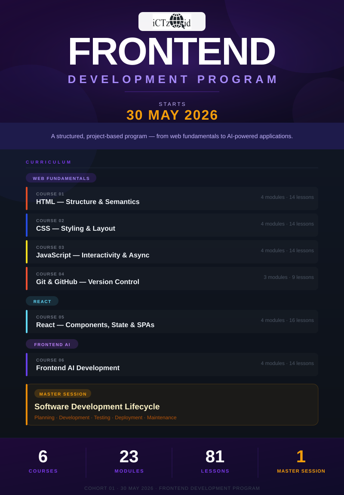
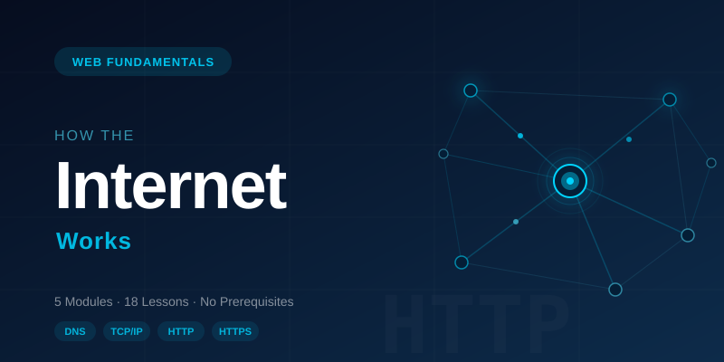
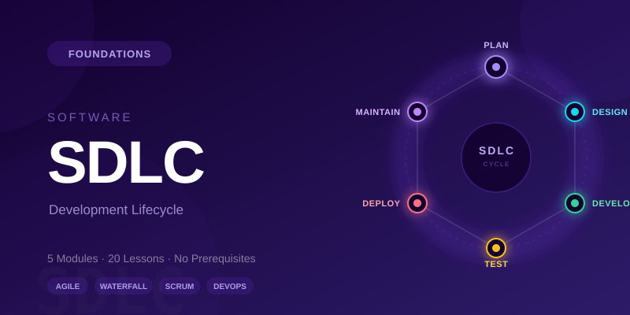
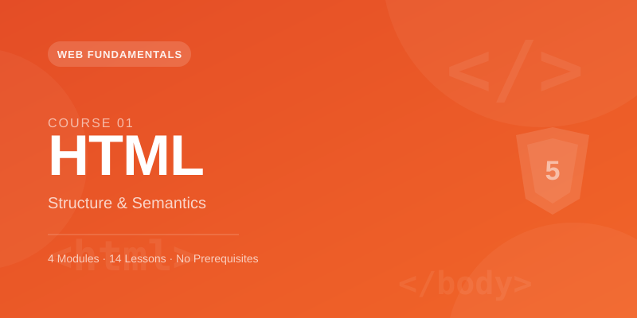
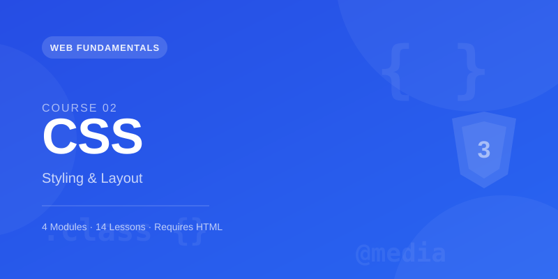
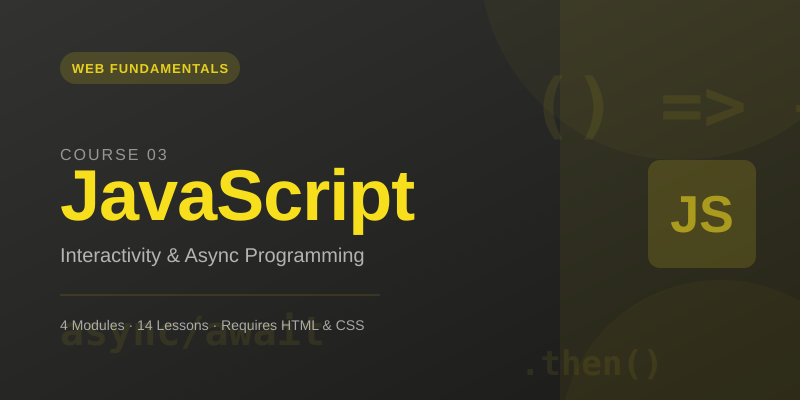
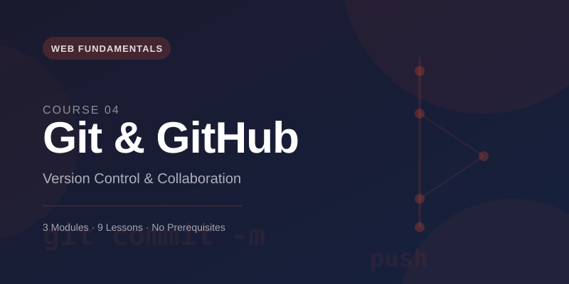
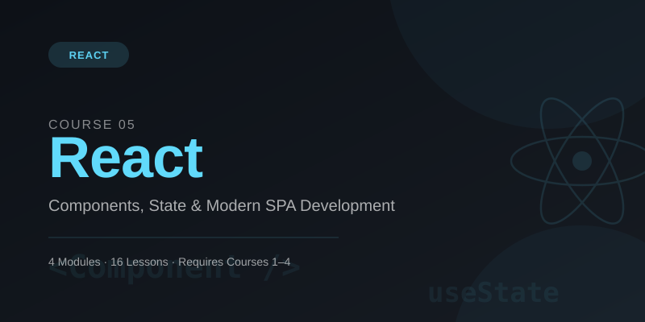
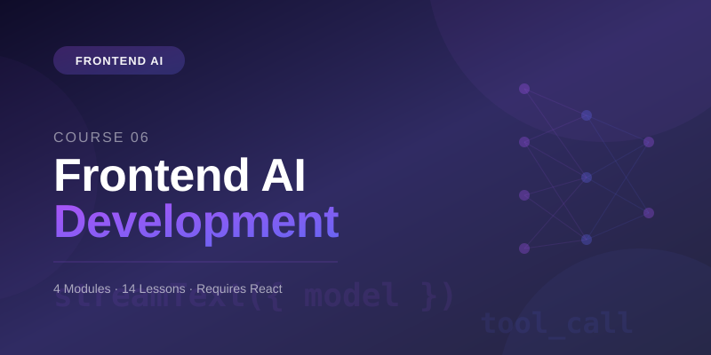

ICTZoid Web Development Program
A complete curriculum covering how the web works, professional development practices, and the AI-powered tools shaping the next generation of frontend engineers.

ICTZoid · 2026
From Zero to AI-Powered Developer
ICTZoid Web Development Program
© 2026 Samuel M. Ortil & ICTZoid. All rights reserved.
No part of this publication may be reproduced, distributed, or transmitted in any form or by any means, including photocopying, recording, or other electronic or mechanical methods, without the prior written permission of the author.
For permissions and enquiries, contact the ICTZoid team through the program platform.
First edition — May 2026
Part I
01

Track: Web Fundamentals · Level: Beginner · Prerequisite: None
Before writing a single line of HTML, every web developer should understand what actually happens when a URL is typed into a browser. This course walks through the full journey — from keyboard to screen — covering the protocols, systems, and concepts that make the web function. By the end you will be able to explain DNS lookups, HTTP conversations, packet routing, and status codes with confidence.
By the end of this course you will be able to:
| # | Module | Lessons |
|---|---|---|
| 1 | The Big Picture | 3 |
| 2 | The Internet's Toolkit | 4 |
| 3 | A Request's Journey | 4 |
| 4 | HTTP in Depth | 4 |
| 5 | URLs and Addresses | 3 |
The web is a system built on top of the internet that lets you publish and retrieve documents (pages, images, videos, applications) using a common set of standards. It is not the internet itself — the internet is the global network of cables, routers, and wireless links; the web is one of many services that runs over it.
Key distinction:
| Term | What it means |
|---|---|
| The Internet | The physical + logical network connecting billions of devices worldwide |
| The Web (WWW) | A service that uses the internet to exchange hyperlinked documents via HTTP |
Other services that also run over the internet include email (SMTP/IMAP), file transfer (FTP), and video calls (WebRTC/SIP).
Every interaction on the web involves two roles:
Clients are internet-connected devices that request information. Your laptop running Chrome, your phone running Safari, a smart TV browser — all are clients. The defining trait: a client initiates the conversation.
Servers are computers (usually powerful machines in data centres) that store websites, APIs, images, and files. A server listens for incoming requests and sends back the appropriate content.
CLIENT SERVER
┌───────┐ ── HTTP Request ──► ┌────────────┐
│ You │ │ Web Server │
│ │ ◄── HTTP Response ── │ │
└───────┘ └────────────┘
Analogy: Think of a client as a customer walking into a shop and a server as the shop itself. The customer asks for a product; the shop hands it over.
When a server responds it sends back two categories of files:
Code files — the browser interprets and assembles these to build the page:
Asset files — content that is displayed or used directly within the page:
A single page load often triggers dozens of separate requests — one for the HTML, then more for each stylesheet, script, image, and font referenced inside it.
Every device on the internet needs a unique address so data knows where to go. This is an IP (Internet Protocol) address.
IPv4 example: 192.0.2.172
Four groups of numbers (0–255) separated by dots. Around 4.3 billion possible addresses — a number the world has already run out of.
IPv6 example: 2001:0db8:85a3:0000:0000:8a2e:0370:7334
Eight groups of four hex digits. 340 undecillion addresses — essentially unlimited.
Large websites operate clusters of servers in multiple locations, each with its own IP, for speed and reliability.
IP addresses are precise but impossible to memorise. The Domain Name System solves this by acting as the internet's phone book — it maps human-readable names to numeric addresses.
Flow of a DNS lookup:
Browser Cache → OS Cache → Resolving Resolver → Root Nameserver
│
TLD Nameserver (.com/.org)
│
Authoritative Nameserver
│
IP Address returned
│
Browser caches result
mozilla.org into the browser.mozilla.org.63.245.208.195).Why it matters: Without DNS, the entire web would depend on users knowing numerical addresses. Every domain change would break every bookmark.
TCP/IP is not one thing — it is a suite of two complementary protocols:
| Protocol | Layer | Job |
|---|---|---|
| IP (Internet Protocol) | Network | Addressing and routing — gets packets to the right machine |
| TCP (Transmission Control Protocol) | Transport | Reliability — ensures all packets arrive and are reassembled correctly |
How TCP establishes a connection — the Three-Way Handshake:
Client ──── SYN ────────────────────────► Server
Client ◄─── SYN-ACK ──────────────────── Server
Client ──── ACK ────────────────────────► Server
(connection established)
After the handshake, data flows. TCP guarantees delivery: if a packet is lost, it is automatically resent.
Analogy: IP is the postal system that routes your envelope to the right building. TCP is the courier service that confirms the package was received and chases it up if it wasn't.
Data on the internet does not travel as one continuous stream. It is broken into small chunks called packets (typically 1,500 bytes or less each).
Structure of a packet:
┌────────────────────────────────────┐
│ HEADER │
│ Source IP · Destination IP │
│ Packet # · Total packets │
│ Protocol info · Checksum │
├────────────────────────────────────┤
│ PAYLOAD │
│ (the actual data chunk) │
└────────────────────────────────────┘
Why packets instead of one big stream?
| Benefit | Explanation |
|---|---|
| Fault tolerance | If a packet is lost, only that packet needs resending — not the whole file |
| Efficiency | Different packets can take different routes through the network simultaneously |
| Fairness | Many users can share the same network links without one download blocking another |
| Scalability | Thousands of conversations can be interwoven on the same cables |
Packets may arrive out of order. TCP uses the sequence numbers in the headers to reassemble them correctly.
Let's trace exactly what happens from the moment you press Enter after typing https://developer.mozilla.org/en-US/:
Step 1 ── DNS Lookup
Browser has no cached IP for developer.mozilla.org
→ asks recursive resolver
→ resolver queries DNS hierarchy
→ returns IP address (e.g. 34.120.193.11)
Step 2 ── TCP Connection
Browser initiates three-way handshake with server on port 443
Step 3 ── TLS Handshake (HTTPS only)
Browser and server negotiate encryption
Server presents its certificate
Secure channel established
Step 4 ── HTTP Request sent
GET /en-US/ HTTP/2
Host: developer.mozilla.org
Step 5 ── Server processes request
Looks up the resource, builds the response
Step 6 ── HTTP Response received
HTTP/2 200
Content-Type: text/html
[45,227 bytes of HTML follow]
Step 7 ── Browser renders
Parses HTML → fetches linked CSS, JS, images (new requests for each)
Builds DOM and CSSOM → renders the page
IP addresses identify machines; ports identify which service on that machine should handle the request.
| Port | Service |
|---|---|
| 80 | HTTP |
| 443 | HTTPS |
| 25 | SMTP (email) |
| 22 | SSH |
When you request https://mozilla.org, the browser automatically connects to port 443. You never see it in the URL because browsers treat it as the default for HTTPS.
HTTPS = HTTP + TLS (Transport Layer Security). The S stands for Secure.
TLS provides three things:
Any site handling passwords, payment details, or personal data must use HTTPS. Modern browsers actively warn users on HTTP-only pages.
Once the HTML arrives, the browser does not display it directly. It runs a rendering pipeline:
HTML bytes
│
▼
Parse HTML → DOM (Document Object Model)
│
├─── encounters <link rel="stylesheet"> → fetch CSS → CSSOM
│
└─── encounters <script> → fetch JS → execute
│
▼
Render Tree (DOM + CSSOM merged)
│
▼
Layout (calculate positions + sizes)
│
▼
Paint (draw pixels to screen)
Each external resource (image, font, script, stylesheet) triggers a brand new HTTP request, re-starting the request journey from Step 4 of the previous lesson.
An HTTP request is a plain-text message with a defined structure:
GET /en-US/ HTTP/2
Host: developer.mozilla.org
Accept: text/html
Accept-Language: en-GB,en;q=0.9
User-Agent: Mozilla/5.0 (Macintosh; Intel Mac OS X)
Key parts:
| Part | Example | Purpose |
|---|---|---|
| Method | GET |
What action to perform |
| Path | /en-US/ |
Which resource on the server |
| Protocol version | HTTP/2 |
Which HTTP version to use |
| Host header | developer.mozilla.org |
Which virtual host to reach (servers host multiple domains) |
| Other headers | Accept, User-Agent |
Extra info about the client and what it accepts |
Common HTTP methods:
| Method | Meaning | Use case |
|---|---|---|
GET |
Fetch a resource | Loading a page, downloading an image |
POST |
Send data to the server | Submitting a form, creating a record |
PUT |
Replace a resource | Updating a user profile |
PATCH |
Partially update a resource | Changing a single field |
DELETE |
Remove a resource | Deleting an account |
The server replies with a response message:
HTTP/2 200
date: Tue, 11 Feb 2025 11:13:30 GMT
content-type: text/html; charset=utf-8
content-length: 45227
server: Google frontend
last-modified: Tue, 11 Feb 2025 00:49:32 GMT
<!doctype html>
<html lang="en">
...
</html>
Key parts:
| Part | Example | Purpose |
|---|---|---|
| Status line | HTTP/2 200 |
Protocol version + outcome code |
| Response headers | content-type, date |
Metadata about the response |
| Body | HTML / JSON / binary | The actual content requested |
Status codes are three-digit numbers grouped by the first digit:
| Range | Category | Meaning |
|---|---|---|
1xx |
Informational | Request received, processing continues |
2xx |
Success | Request was received, understood, and accepted |
3xx |
Redirection | Further action needed to complete the request |
4xx |
Client Error | The request contains bad syntax or cannot be fulfilled |
5xx |
Server Error | The server failed to fulfil a valid request |
The codes you will encounter most:
| Code | Name | What it means in practice |
|---|---|---|
| 200 | OK | Everything worked. Resource is in the response body. |
| 201 | Created | A new resource was successfully created (after POST). |
| 301 | Moved Permanently | URL has changed forever. Browser should update bookmarks. |
| 302 | Found | Temporary redirect. Keep using the original URL. |
| 304 | Not Modified | Cached version is still valid — no need to re-download. |
| 400 | Bad Request | The server could not understand the request (malformed syntax). |
| 401 | Unauthorized | Authentication required (you need to log in). |
| 403 | Forbidden | Server understood the request but refuses to authorise it. |
| 404 | Not Found | Resource does not exist at this URL. |
| 429 | Too Many Requests | Rate limit hit — slow down. |
| 500 | Internal Server Error | Something went wrong on the server. |
| 503 | Service Unavailable | Server is down for maintenance or overloaded. |
| Version | Year | Key features |
|---|---|---|
| HTTP/1.0 | 1996 | New TCP connection per request — very slow |
| HTTP/1.1 | 1997 | Persistent connections, pipelining, chunked transfer |
| HTTP/2 | 2015 | Multiplexing (multiple requests over one connection), header compression, server push |
| HTTP/3 | 2022 | Built on QUIC (UDP-based), faster handshakes, better loss recovery |
Most modern websites use HTTP/2 or HTTP/3. You can see which version is being used in browser DevTools → Network tab → Protocol column.
A URL (Uniform Resource Locator) is the full address of a resource on the web.
https://developer.mozilla.org/en-US/docs/Web?q=http#intro
│ │ │ │ │ │ │
│ │ │ │ │ │ └── Fragment (section on page)
│ │ │ │ │ └────────── Query string (?key=value)
│ │ │ │ └─────────────────── Path
│ │ │ └───────────────────────── Domain (TLD: .org)
│ │ └────────────────────────────────── Subdomain
│ └──────────────────────────────────────────── Domain name
└────────────────────────────────────────────────────── Scheme (protocol)
Breaking it down:
| Component | Example | Notes |
|---|---|---|
| Scheme | https |
Tells the browser which protocol to use. http or https for web; mailto: for email |
| Subdomain | developer |
A separate section of a site. support.mozilla.org and developer.mozilla.org are distinct |
| Domain | mozilla.org |
The registered name, purchased from a registrar |
| TLD | .org |
Top-level domain — indicates type (.com, .org, .edu) or country (.uk, .ng, .de) |
| Path | /en-US/docs/Web |
The specific resource on the server |
| Query string | ?q=http |
Key-value pairs passed to the server (e.g. search terms) |
| Fragment | #intro |
Jumps to a specific section within the page (processed by the browser, not sent to the server) |
Domain names are managed through a global hierarchy:
. (root)
├── .com
│ ├── google.com
│ └── mozilla.com
├── .org
│ └── wikipedia.org
└── .ng
└── gov.ng
The MDN documentation uses a shopping analogy to make these concepts stick. Here is the complete mapping:
| Internet concept | Real-world analogy |
|---|---|
| Your computer (client) | You, the customer |
| Web server | The shop |
| Internet connection | The road from your house to the shop |
| TCP/IP | The car or bike that carries you along the road |
| DNS | Your address book (you look up the shop's address) |
| HTTP | The language you speak when you walk in and order |
| Files / response body | The goods the shop hands you |
| Packets | The goods broken into boxes for transport |
METHOD /path HTTP/version
Host: hostname
Header-Name: header-value
[optional body for POST/PUT/PATCH]
HTTP/version STATUS_CODE Reason Phrase
Header-Name: header-value
[response body]
Browser → OS → Resolver → Root → TLD → Authoritative → IP address
Type URL → DNS lookup → TCP handshake → TLS handshake (HTTPS)
→ HTTP GET → 200 OK + HTML → parse HTML
→ fetch CSS/JS/images → render pipeline → display
Module 1
1. What is the difference between the internet and the World Wide Web?
2. Which role initiates an HTTP conversation — the client or the server?
3. Name three types of code files and three types of asset files a browser might request.
Module 2
4. What problem does DNS solve?
5. Describe the three steps of the TCP three-way handshake.
6. List three advantages of sending data as packets rather than as a single stream.
Module 3
7. In order, list the six major steps that happen after you press Enter on a URL.
8. What port does HTTPS use by default?
9. What three guarantees does TLS provide?
Module 4
10. What HTTP method should you use to submit a login form? Why not GET?
11. A user sees a 403 error. What does this mean and how is it different from a 401?
12. What improvement did HTTP/2 introduce over HTTP/1.1?
Module 5
13. Break this URL into its components: https://api.example.com/v1/users?page=2#results
14. What part of a URL is processed entirely by the browser and never sent to the server?
15. Who ultimately manages the global namespace for domain names?
F12).Run the following in your terminal and observe each step:
# Linux / macOS
dig mozilla.org +trace
# Windows
nslookup mozilla.org
Note the IP address returned. Try opening that IP directly in your browser.
Using DevTools or curl:
curl -I https://developer.mozilla.org/en-US/
Identify: content-type, content-length, server, cache-control.
Visit these paths on a site you control (or use a test server) and trigger:
- A 404 — request a path that doesn't exist
- A 301 — set up a redirect and observe it in DevTools
Break each of these URLs into scheme, subdomain, domain, TLD, path, query string, and fragment:
https://www.youtube.com/watch?v=abc123
https://mail.google.com/mail/u/0/#inbox
https://docs.github.com/en/actions
| Term | Definition |
|---|---|
| Client | A device or application that initiates requests to a server |
| Server | A computer that stores resources and responds to client requests |
| IP Address | A unique numerical label assigned to each device on a network |
| DNS | Domain Name System — translates domain names to IP addresses |
| TCP | Transmission Control Protocol — guarantees reliable, ordered delivery of data |
| IP | Internet Protocol — handles addressing and routing of packets |
| HTTP | Hypertext Transfer Protocol — the language of the web |
| HTTPS | HTTP with TLS encryption |
| TLS | Transport Layer Security — provides encryption, authentication, and integrity |
| Packet | A small chunk of data with a header (routing info) and payload (content) |
| URL | Uniform Resource Locator — the full address of a web resource |
| Domain | The human-readable name registered for a website |
| TLD | Top-level domain — the last part of a domain (.com, .org, .ng) |
| Port | A number identifying a specific service on a networked machine |
| Status code | A three-digit number in an HTTP response indicating the outcome |
| Cache | Stored copies of responses to speed up future requests |
| Rendering pipeline | The browser's process of turning HTML/CSS/JS into visible pixels |
Source material: MDN Web Docs — How the web works
02

Track: Foundations · Level: Beginner · Prerequisite: None
Every piece of software — from a mobile app to an enterprise platform — was built by following a process. That process is the Software Development Lifecycle: a structured sequence of phases that takes a vague idea and turns it into a shipped, maintained product. This course teaches you to think like a professional engineer before you write a single line of code. You will understand why teams follow processes, learn the dominant methodologies used in industry today, and practise the ceremonies and artefacts that real Agile teams produce every day.
By the end of this course you will be able to:
| # | Module | Lessons |
|---|---|---|
| 1 | What Is the SDLC? | 4 |
| 2 | Phase by Phase | 6 |
| 3 | Development Methodologies | 4 |
| 4 | Agile in Practice | 4 |
| 5 | Modern Tools and DevOps | 2 |
In the 1960s and 70s, software projects were failing at an alarming rate — over budget, over deadline, unreliable, or simply abandoned. This period became known as the Software Crisis. The root cause was treating software like manufacturing: start coding, ship, fix later. The solution was to apply engineering discipline to software development — hence the SDLC.
Common failure patterns without a process:
| Problem | What happens |
|---|---|
| No requirements phase | Team builds the wrong thing |
| No design phase | Code becomes unmaintainable quickly |
| No testing phase | Bugs reach production and cost 10–100× more to fix |
| No planning phase | Project overruns time and budget |
| No maintenance phase | Product degrades and loses users |
The SDLC is not about bureaucracy — it is about making sure the right thing gets built, correctly, sustainably.
The SDLC is typically broken into six phases. They may overlap or repeat depending on the methodology, but the concerns they address are universal.
┌─────────┐ ┌─────────────┐ ┌────────┐
│ PLAN │────►│ REQUIREMENTS│────►│ DESIGN │
└─────────┘ └─────────────┘ └────────┘
│
┌──────────┐ ┌──────────┐ ┌──────▼────┐
│ MAINTAIN │◄────│ DEPLOY │◄────│ DEVELOP │
└──────────┘ └──────────┘ └──────┬────┘
│
┌────▼────┐
│ TEST │
└─────────┘
| Phase | Core question | Key deliverables |
|---|---|---|
| Plan | Is this worth building? | Project scope, timeline, budget, risk assessment |
| Requirements | What exactly should it do? | Requirements document, user stories, use cases |
| Design | How will we build it? | Architecture diagram, data model, UI wireframes |
| Develop | Build it | Working code, code reviews, unit tests |
| Test | Does it work correctly? | Test plan, bug reports, test results |
| Deploy | Get it to users | Release notes, deployment scripts, monitoring |
| Maintain | Keep it working | Bug fixes, performance improvements, updates |
Understanding who does what is essential before learning how teams work together.
| Role | Responsibilities |
|---|---|
| Product Manager (PM) | Owns the product vision; decides what to build and why; prioritises the backlog |
| Business Analyst (BA) | Bridges the gap between stakeholders and engineers; writes requirements |
| UX Designer | Designs user flows, wireframes, and prototypes; conducts user research |
| Software Engineer (Dev) | Writes, tests, and reviews code; estimates effort |
| QA Engineer | Creates and executes test plans; reports and tracks bugs |
| DevOps / Platform Engineer | Manages infrastructure, CI/CD pipelines, and deployment |
| Scrum Master | Facilitates Agile ceremonies; removes blockers; coaches the team |
| Tech Lead / Engineering Manager | Makes architectural decisions; mentors engineers; coordinates delivery |
In small teams or startups, one person may cover several of these roles.
No single SDLC model is universally best. The right choice depends on:
| Factor | Favours Waterfall | Favours Agile |
|---|---|---|
| Requirements stability | Fixed, well-understood | Changing, evolving |
| Customer involvement | Low (sign-off at start) | High (continuous feedback) |
| Delivery expectation | One big release | Frequent incremental releases |
| Team size | Large, geographically spread | Small, co-located |
| Risk tolerance | Low (compliance, safety) | Higher (startups, innovation) |
| Documentation needs | Heavy (regulated industries) | Lightweight (working software over docs) |
Most modern teams use some form of Agile. Waterfall is still used in aerospace, defence, medical devices, and large government contracts where requirements are legally fixed.
The planning phase determines whether a project should proceed, how long it will take, and what it will cost.
Key activities:
Common estimation techniques:
| Technique | How it works |
|---|---|
| Planning Poker | Team members independently pick an estimate card; discuss disagreements |
| T-shirt sizing | Assign XS / S / M / L / XL relative sizes |
| Three-point estimation | Average of Optimistic, Most Likely, and Pessimistic estimates |
| Reference class forecasting | Compare to similar past projects |
Requirements describe what the system must do, not how. Getting this phase right is the single biggest predictor of project success.
Types of requirements:
| Type | Description | Example |
|---|---|---|
| Functional | Specific behaviours the system must perform | "Users can reset their password via email" |
| Non-functional | Quality attributes of the system | "The login page must load in < 2 seconds" |
| Business rules | Constraints from the business domain | "Students must complete Module 1 before Module 2" |
| User requirements | What the end user needs to accomplish | "As a student, I want to track my progress" |
Gathering techniques:
Good requirements are SMART: Specific, Measurable, Achievable, Relevant, Testable.
Design translates requirements into a blueprint. It happens at two levels:
High-level (architectural) design:
Browser ──HTTP──► API Server ──SQL──► Database
│
──Queue──► Worker ──► Email / Storage
Decisions made here:
- Monolith vs microservices
- Relational vs document database
- Synchronous vs asynchronous communication
- Authentication strategy (JWT, session, OAuth)
Low-level (detailed) design:
- Entity-Relationship (ER) diagrams
- API endpoint design (REST, GraphQL)
- Component diagrams
- UI wireframes and prototypes
Artefacts produced:
- Architecture Decision Records (ADRs)
- Database schema
- API contract (OpenAPI / Swagger)
- UI wireframes (Figma)
The development phase is where software is actually built. Professional teams make it structured, not chaotic.
Version control workflow (GitFlow / trunk-based):
main ─────────────────────────────────────────►
│ ▲
▼ git checkout -b │ pull request
feature/login ─────────┤
(code + commits + tests)
Coding standards matter because:
- Code is read far more often than it is written
- Consistent style reduces cognitive load during code review
- Automated linters catch issues before human review
Code review checklist:
- [ ] Does it solve the intended problem?
- [ ] Are edge cases handled?
- [ ] Is the logic understandable without excessive comments?
- [ ] Are there sufficient tests?
- [ ] Does it introduce any security vulnerabilities?
- [ ] Does it follow team conventions?
Testing is not a single activity — it is a discipline with multiple levels and types, each catching different kinds of defects.
Testing levels (the pyramid):
▲
/E2E\ ← Few, slow, expensive but test the full system
/──────\
/ Integ \ ← Test interactions between components
/────────────\
/ Unit Tests \ ← Many, fast, cheap — test individual functions
/────────────────\
| Level | Scope | Speed | Maintained by |
|---|---|---|---|
| Unit | Single function / class | Very fast (ms) | Developers |
| Integration | Multiple components together | Medium (seconds) | Developers / QA |
| System | Entire application | Slow (minutes) | QA |
| Acceptance | Business requirements met | Varies | QA + Product |
| End-to-End (E2E) | Full user flows in the browser | Slowest | QA / Automation |
Other test types:
| Type | Purpose |
|---|---|
| Regression | Ensure new changes haven't broken existing features |
| Performance | Verify system handles expected load |
| Security | Find vulnerabilities before attackers do |
| Usability | Evaluate how easy the product is to use |
| Smoke | Quick sanity check after a deployment |
Deployment strategies:
| Strategy | How it works | Risk |
|---|---|---|
| Big Bang | Replace old with new all at once | High |
| Rolling | Gradually replace instances over time | Medium |
| Blue-Green | Two identical environments; switch traffic instantly | Low |
| Canary | Route a small % of traffic to the new version first | Low |
| Feature flags | Ship code dark; enable features for specific users | Very low |
Maintenance types:
The cost of fixing a bug grows significantly the later in the SDLC it is found:
| When found | Relative cost |
|---|---|
| During requirements | 1× |
| During design | 5× |
| During development | 10× |
| During testing | 20× |
| After deployment | 100× |
Waterfall is the original formalised SDLC model, introduced by Winston Royce in 1970. Each phase must be completed and signed off before the next begins.
Requirements
│
▼
Design
│
▼
Implementation
│
▼
Verification
│
▼
Maintenance
Strengths:
- Clear milestones and deliverables
- Easy to manage and report on
- Well-suited to fixed-price contracts with stable requirements
- Heavy documentation is useful for regulated industries
Weaknesses:
- Changes are expensive — backtracking means repeating phases
- No working software until late in the cycle
- Assumes requirements can be fully known upfront (rarely true)
- Testing happens too late to catch design problems
Best used for: Government contracts, safety-critical systems (aviation, medical), projects with legally fixed specifications.
Agile is not a methodology — it is a philosophy. It emerged from the 2001 Agile Manifesto, signed by 17 software practitioners who were frustrated by heavyweight, document-driven processes.
The four core values:
| We value... | Over... |
|---|---|
| Individuals and interactions | Processes and tools |
| Working software | Comprehensive documentation |
| Customer collaboration | Contract negotiation |
| Responding to change | Following a plan |
The right column still has value — we just value the left column more.
The twelve principles (summarised):
Scrum is the most widely used Agile framework. It divides work into fixed-length iterations called Sprints (typically 1–2 weeks).
Roles:
| Role | Responsibility |
|---|---|
| Product Owner | Owns and prioritises the Product Backlog; represents stakeholders |
| Scrum Master | Facilitates ceremonies; removes impediments; coaches the team |
| Development Team | Self-organising group that delivers the Sprint Goal |
Artefacts:
| Artefact | Description |
|---|---|
| Product Backlog | Ordered list of everything that might go into the product |
| Sprint Backlog | Subset of Product Backlog items selected for the current Sprint |
| Increment | The sum of all completed items — must be "Done" and potentially shippable |
Ceremonies:
Sprint Planning ──► Daily Scrum (×n) ──► Sprint Review ──► Retrospective
│ │
└──────────────────────── Next Sprint ──────────────────────────────┘
| Ceremony | When | Duration (2-week sprint) | Purpose |
|---|---|---|---|
| Sprint Planning | Start of sprint | ≤ 4 hours | Select items, define Sprint Goal, estimate tasks |
| Daily Scrum | Every day | 15 minutes | Sync, surface blockers |
| Sprint Review | End of sprint | ≤ 2 hours | Demo increment to stakeholders, gather feedback |
| Retrospective | After review | ≤ 1.5 hours | Inspect team process and improve |
Kanban:
Kanban is a flow-based system focused on visualising work and limiting work in progress (WIP). Unlike Scrum, there are no sprints — work flows continuously.
┌──────────┬────────────┬──────────────┬──────────┐
│ BACKLOG │ IN PROGRESS │ REVIEW │ DONE │
│ │ (WIP: max 3) │ (WIP: max 2)│ │
├──────────┼────────────┼──────────────┼──────────┤
│ Task A │ Task D │ Task F │ Task G │
│ Task B │ Task E │ │ Task H │
│ Task C │ │ │ Task I │
└──────────┴────────────┴──────────────┴──────────┘
Key Kanban principles:
- Visualise the workflow
- Limit WIP to reduce context-switching and bottlenecks
- Manage flow — measure cycle time and throughput
- Make process policies explicit
- Improve continuously
SAFe (Scaled Agile Framework):
For large organisations running dozens of Agile teams, SAFe provides a framework that coordinates multiple teams towards a shared Programme Increment (PI) — typically 8–12 weeks of work broken into sprints.
Choosing a methodology:
| Situation | Recommendation |
|---|---|
| Small team, unclear requirements | Scrum |
| Support/ops work with unpredictable incoming tasks | Kanban |
| New product with active stakeholder involvement | Scrum |
| Large enterprise, multiple coordinated teams | SAFe |
| Government / regulated / fixed-requirements project | Waterfall |
| Continuous deployment, fast iteration | DevOps + Kanban or Scrum |
A user story is a short description of a feature told from the perspective of the end user.
Format:
As a [type of user],
I want to [perform some action],
so that [I achieve some goal / value].
Examples:
As a student, I want to resume my last lesson when I return to the app, so that I don't have to scroll to find where I left off.
As an instructor, I want to see how many students have completed each lesson, so that I can identify where learners are struggling.
Acceptance criteria define the conditions that must be true for the story to be considered "done":
Story: Student can reset their password
Acceptance Criteria:
✓ A "Forgot password?" link appears on the login page
✓ Clicking it requests an email address
✓ An email is sent within 60 seconds with a reset link
✓ The reset link expires after 1 hour
✓ Clicking an expired link shows a clear error with an option to request a new one
✓ After a successful reset, the user is redirected to the login page
The INVEST checklist for user stories:
| Letter | Meaning |
|---|---|
| I | Independent — can be delivered alone |
| N | Negotiable — details can be discussed |
| V | Valuable — provides value to a user or business |
| E | Estimable — team can size it |
| S | Small — fits in a sprint |
| T | Testable — acceptance criteria can be verified |
Backlog refinement (also called grooming) is the ongoing process of keeping the backlog ready. It happens 1–2× per sprint:
Sprint planning:
Definition of Ready (DoR) — a story is ready for the sprint if:
- It has clear acceptance criteria
- It is estimated
- Dependencies are identified
- It is small enough to complete in the sprint
Definition of Done (DoD) — a story is done when:
- Code is written and peer-reviewed
- Unit and integration tests pass
- Feature is tested against acceptance criteria
- Documentation is updated
- Code is merged and deployed to the test environment
Daily Standup (Daily Scrum):
Each team member answers three questions in ≤15 minutes:
1. What did I complete yesterday?
2. What will I work on today?
3. Is anything blocking me?
The standup is not a status report to the manager — it is a synchronisation meeting for the team. Detailed discussions are taken offline.
Sprint Review:
Retrospective:
The retrospective is the team's opportunity to improve their own process. A common format is Start / Stop / Continue:
| Category | Question |
|---|---|
| Start | What should we begin doing that we aren't? |
| Stop | What are we doing that isn't helping? |
| Continue | What is working well that we should keep? |
Other formats: 4Ls (Liked, Learned, Lacked, Longed for), Mad/Sad/Glad, Sailboat.
Key principle: Retrospective actions must be SMART and assigned to a named person, or they will not get done.
Velocity is the average number of story points a team completes per sprint. It is used for forecasting, not performance management.
Sprint 1: 24 pts completed
Sprint 2: 31 pts completed
Sprint 3: 27 pts completed
─────────────────────────
Average velocity: 27 pts/sprint
Remaining backlog: 135 pts
Estimated sprints remaining: 135 ÷ 27 ≈ 5 sprints
Burn-down chart:
A burn-down chart shows remaining work (story points or tasks) against time in the sprint.
SP
40 ┤╲
35 ┤ ╲ (ideal line)
30 ┤ ╲ ╮
25 ┤ ╲ actual
20 ┤ ╲ ╱
15 ┤ ╲╱
10 ┤
5 ┤
0 ┤─────────────────
D1 D2 D3 D4 D5 D6 D7 D8 D9 D10
Useful Agile metrics:
| Metric | What it measures |
|---|---|
| Velocity | Team throughput per sprint |
| Cycle time | Time from "in progress" to "done" for a single item |
| Lead time | Time from item creation to delivery |
| Sprint goal achievement rate | % of sprints where the Sprint Goal was met |
| Bug escape rate | Bugs found in production vs. found in testing |
Important: Metrics should improve the team's process, not be used to compare teams or individuals.
DevOps is the practice of breaking down the wall between development and operations. The goal: ship software faster, more reliably, and sustainably.
Core DevOps practices:
| Practice | Description |
|---|---|
| Continuous Integration (CI) | Every code commit is automatically built and tested |
| Continuous Delivery (CD) | Every passing build is automatically deployable to a staging environment |
| Continuous Deployment | Every passing build is automatically deployed to production |
| Infrastructure as Code (IaC) | Servers and infrastructure are defined in version-controlled files |
| Monitoring and Observability | Production systems are continuously monitored for errors and performance |
A typical CI/CD pipeline:
Developer pushes code
│
▼
Linting + Type Check
│
▼
Unit Tests
│
▼
Integration Tests
│
▼
Build (Docker image / bundle)
│
▼
Deploy to Staging
│
▼
Smoke Tests on Staging
│
▼
Deploy to Production ◄── manual gate (CD) or automatic (Continuous Deployment)
│
▼
Monitor (alerts, dashboards, logs)
CI tools: GitHub Actions, GitLab CI, CircleCI, Jenkins
Monitoring tools: Datadog, Grafana, Sentry, PagerDuty
The DORA metrics (industry standard for measuring DevOps performance):
| Metric | Elite teams |
|---|---|
| Deployment frequency | Multiple times per day |
| Lead time for changes | Less than 1 hour |
| Change failure rate | Less than 5% |
| Mean time to restore | Less than 1 hour |
Knowing the tools every professional team uses is part of being job-ready.
Backlog and issue tracking:
| Tool | Best for |
|---|---|
| Jira | Large teams, complex workflows, deep reporting |
| Linear | Engineering-focused teams, fast and keyboard-driven |
| GitHub Projects | Teams already on GitHub, lightweight kanban |
| Trello | Small teams, simple kanban boards |
| Notion | Documentation-heavy teams that also want basic project tracking |
Communication:
| Tool | Use case |
|---|---|
| Slack / Teams | Real-time messaging, team channels |
| Confluence / Notion | Internal documentation and wikis |
| Loom | Async video updates and demos |
Design and prototyping:
| Tool | Use case |
|---|---|
| Figma | UI design, prototyping, design handoff |
| Miro / FigJam | Collaborative diagramming, retrospectives, workshops |
| draw.io / Lucidchart | Architecture and flow diagrams |
A healthy team combines these tools deliberately:
1. Conversations happen in Slack
2. Decisions are documented in Confluence/Notion
3. Work is tracked in Jira/Linear
4. Code lives in GitHub/GitLab
5. Designs live in Figma
PLAN → REQUIREMENTS → DESIGN → DEVELOP → TEST → DEPLOY → MAINTAIN
│ │ │ │ │ │ │
Scope User stories Architecture Code Test Release Bug fixes
Budget Wireframes DB schema Review Reports Monitor Updates
Risk Use cases API design Tests Rollback Refactor
Stable requirements + regulated industry + fixed price → Waterfall
Evolving requirements + active users + frequent releases → Agile/Scrum
Continuous flow of support or ops work → Kanban
Large org, multiple Agile teams → SAFe
Mon W1 │ Sprint Planning (4h)
Tue–Fri W1 │ Development + Daily Standup (15min)
Mon–Thu W2 │ Development + Daily Standup (15min)
Fri W2 │ Sprint Review (2h) + Retrospective (1.5h)
Module 1
1. What was the Software Crisis and what caused it?
2. What are the six phases of the SDLC? Give one key deliverable for each.
3. What is the difference between a Product Owner and a Scrum Master?
Module 2
4. What is the difference between a functional and a non-functional requirement? Give one example of each.
5. What is the difference between Continuous Delivery and Continuous Deployment?
6. Name three deployment strategies and describe the risk level of each.
Module 3
7. What are the four values of the Agile Manifesto?
8. In Scrum, what is the difference between the Product Backlog and the Sprint Backlog?
9. What does WIP limit mean in Kanban, and why does limiting it help?
Module 4
10. Write a valid user story for the following scenario: "Learners want to download their certificate as a PDF."
11. What is the Definition of Done (DoD) and why is it important?
12. A burn-down chart shows a flat line for three days in a row. What could this indicate?
Module 5
13. What does CI stand for and what problem does it solve?
14. Name the four DORA metrics and state the elite benchmark for each.
15. Your team needs to track bugs, write technical documentation, and manage sprint backlog. Which combination of tools would you recommend and why?
Read a news article about a major software failure (e.g. the Healthcare.gov launch in 2013, the Knight Capital trading glitch, or the Boeing 737 MAX MCAS software). Identify which SDLC phase the failure originated in and what could have prevented it.
For a simple to-do app, write five user stories covering:
1. Creating a task
2. Marking a task complete
3. Filtering tasks by status
4. Setting a due date on a task
5. Deleting completed tasks
For each, write at least three acceptance criteria.
In groups of 3–5, estimate the effort for the user stories written in Exercise 2 using the Fibonacci sequence (1, 2, 3, 5, 8, 13). Discuss disagreements until the group reaches consensus.
Using GitHub Projects, Linear (free tier), or a physical whiteboard, set up a sprint board with the following columns:
Backlog → Ready → In Progress (WIP: 2) → Review → Done
Move at least one user story from Exercise 2 through all columns.
After completing a group project or assignment, run a 30-minute retrospective using the Start / Stop / Continue format. Document at least two action items with assigned owners and a target completion date.
| Term | Definition |
|---|---|
| SDLC | Software Development Lifecycle — the structured process for planning, creating, testing, and deploying software |
| Requirements | A statement of what a system must do (functional) or how well it must do it (non-functional) |
| Agile | A philosophy of software development that values flexibility, collaboration, and delivering working software frequently |
| Scrum | An Agile framework using fixed-length Sprints, three roles (PO, SM, Dev), three artefacts, and four ceremonies |
| Kanban | A flow-based Agile method that visualises work and limits work in progress |
| Sprint | A fixed time-box (1–4 weeks) in Scrum during which a potentially shippable product increment is created |
| User story | A feature description written from the end-user's perspective: "As a…, I want to…, so that…" |
| Acceptance criteria | Conditions that must be met for a user story to be considered complete |
| Product Backlog | An ordered list of everything that might be needed in the product |
| Sprint Backlog | The set of items selected for the current sprint plus the plan to deliver them |
| Velocity | The average number of story points completed per sprint |
| Burn-down chart | A chart showing remaining work against time in a sprint |
| CI | Continuous Integration — automatically building and testing every code commit |
| CD | Continuous Delivery/Deployment — automatically releasing tested code to staging or production |
| Definition of Done | A shared agreement on what "complete" means for a story or sprint |
| Technical debt | The accumulated cost of shortcuts and quick fixes that make future changes harder |
| Retrospective | A ceremony held at the end of each sprint to reflect on and improve the team's process |
| WIP limit | A constraint on how many items can be in a given workflow stage simultaneously |
| DORA metrics | Four industry-standard metrics for measuring software delivery performance |
| Feature flag | A technique to deploy code that is hidden until deliberately enabled for specific users |
Reference: Agile Manifesto · Scrum Guide · DORA State of DevOps Report
Part II
03

HTML (HyperText Markup Language) gives every web page its structure and meaning.
Before any styling or interactivity exists, HTML describes what the content is — a heading,
a paragraph, a navigation link, a form. This course takes you from writing your first valid
document all the way to building fully accessible, validated HTML that meets professional standards.
By the end of this course you will be able to:
| # | Module | Focus |
|---|---|---|
| 1 | Document Structure | DOCTYPE, head, body, meta tags |
| 2 | Semantic HTML | nav, main, article, section, aside, header, footer |
| 3 | Forms and Inputs | input types, labels, fieldsets, validation attributes |
| 4 | Accessibility | ARIA roles, landmarks, alt text, keyboard navigation |
Every HTML document follows the same skeleton:
<!DOCTYPE html>
<html lang="en">
<head>
<meta charset="UTF-8" />
<meta name="viewport" content="width=device-width, initial-scale=1.0" />
<title>My First Page</title>
<link rel="stylesheet" href="style.css" />
</head>
<body>
<h1>Hello, world!</h1>
<p>This is my first HTML page.</p>
</body>
</html>
Why each line matters:
| Line | Purpose |
|---|---|
<!DOCTYPE html> |
Tells the browser this is an HTML5 document |
<html lang="en"> |
Root element; lang helps screen readers and search engines |
<meta charset="UTF-8"> |
Character encoding — supports every language and emoji |
<meta name="viewport"> |
Prevents mobile browsers from zooming out by default |
<title> |
Shown in the browser tab and search results |
<!-- Headings — h1 is the page title; only one per page -->
<h1>ICTZoid Web Development Program</h1>
<h2>Course Catalogue</h2>
<h3>Module 1 — Foundations</h3>
<!-- Paragraphs and inline text -->
<p>HTML is the <strong>structure</strong> of the web.
CSS is the <em>style</em>. JavaScript is the behaviour.</p>
<!-- Unordered list -->
<ul>
<li>HTML</li>
<li>CSS</li>
<li>JavaScript</li>
</ul>
<!-- Ordered list -->
<ol>
<li>Plan</li>
<li>Design</li>
<li>Develop</li>
<li>Test</li>
<li>Deploy</li>
</ol>
<!-- Description list — great for glossaries -->
<dl>
<dt>DOM</dt>
<dd>Document Object Model — a tree representation of an HTML document</dd>
<dt>API</dt>
<dd>Application Programming Interface — a contract between software components</dd>
</dl>
Semantic elements carry meaning beyond just visual presentation. Screen readers and search
engines use them to understand your page's structure.
<body>
<header>
<nav aria-label="Main navigation">
<a href="/">Home</a>
<a href="/courses">Courses</a>
<a href="/about">About</a>
</nav>
</header>
<main>
<article>
<h1>Course 1 — HTML</h1>
<section>
<h2>Module 1 — Document Structure</h2>
<p>...</p>
</section>
<aside>
<h2>Quick Tip</h2>
<p>Validate your HTML at validator.w3.org</p>
</aside>
</article>
</main>
<footer>
<p>© 2026 ICTZoid. All rights reserved.</p>
</footer>
</body>
Why semantics matter:
<main> or <nav><article> and <main><form action="/register" method="POST" novalidate>
<!-- Always associate labels with inputs -->
<div class="field">
<label for="name">Full name</label>
<input id="name" name="name" type="text"
autocomplete="name" required
aria-describedby="name-hint name-error" />
<p id="name-hint" class="hint">As it appears on your ID</p>
<p id="name-error" class="error" hidden aria-live="polite"></p>
</div>
<div class="field">
<label for="email">Email address</label>
<input id="email" name="email" type="email"
autocomplete="email" required />
</div>
<div class="field">
<label for="password">Password</label>
<input id="password" name="password" type="password"
autocomplete="new-password"
minlength="8" required
aria-describedby="pwd-rules" />
<p id="pwd-rules" class="hint">Minimum 8 characters, include a number</p>
</div>
<!-- Group related checkboxes with fieldset + legend -->
<fieldset>
<legend>Courses of interest</legend>
<label><input type="checkbox" name="interests" value="html" /> HTML</label>
<label><input type="checkbox" name="interests" value="css" /> CSS</label>
<label><input type="checkbox" name="interests" value="js" /> JavaScript</label>
</fieldset>
<button type="submit">Create account</button>
</form>
ARIA (Accessible Rich Internet Applications) fills gaps where HTML semantics are not enough.
Rule 1: Never use ARIA when native HTML can do the job.
<!-- ❌ Unnecessary ARIA -->
<button role="button">Submit</button>
<!-- ✅ Native HTML already has the role -->
<button>Submit</button>
<!-- ✅ ARIA is needed here (custom component) -->
<div role="tablist" aria-label="Course sections">
<div role="tab" aria-selected="true" aria-controls="panel-1" id="tab-1" tabindex="0">HTML</div>
<div role="tab" aria-selected="false" aria-controls="panel-2" id="tab-2" tabindex="-1">CSS</div>
</div>
<div role="tabpanel" id="panel-1" aria-labelledby="tab-1">HTML content...</div>
<div role="tabpanel" id="panel-2" aria-labelledby="tab-2" hidden>CSS content...</div>
Live regions — announce dynamic content to screen readers:
<!-- Announce status messages without moving focus -->
<div aria-live="polite" id="status"></div>
<script>
document.getElementById("status").textContent = "Form saved successfully.";
</script>
04

CSS (Cascading Style Sheets) controls how HTML looks. This course covers everything from the fundamentals of selectors and the box model to Flexbox, CSS Grid, responsive design, animations, and building a maintainable design system with CSS custom properties. Every module builds directly on the previous one.
Master the fundamentals that every other CSS concept builds on.
A CSS rule has two parts: a selector and a declaration block.
selector {
property: value;
}
Selector types:
/* Type selectors */
h1 { font-size: 2.5rem; }
p { margin-bottom: 1rem; }
/* Class selectors (most common) */
.card { border-radius: 8px; background: white; }
.btn-primary { background: #1A56A0; color: white; }
/* ID selectors (unique per page) */
#main-nav { position: sticky; top: 0; }
/* Combinators */
nav a { text-decoration: none; } /* descendant */
nav > ul { list-style: none; } /* direct child */
h2 + p { margin-top: 0; } /* adjacent sibling */
h2 ~ p { color: #555; } /* general sibling */
/* Attribute selectors */
input[type="email"] { border-color: #1A56A0; }
a[target="_blank"] { padding-right: 16px; }
a[href^="https"] { /* starts with */ }
a[href$=".pdf"] { /* ends with */ }
a[href*="github"] { /* contains */ }
/* Pseudo-classes */
a:hover { color: #7C3AED; }
a:focus-visible { outline: 2px solid #7C3AED; }
input:invalid { border-color: #DC2626; }
input:disabled { opacity: 0.5; }
li:first-child { border-top: none; }
li:last-child { border-bottom: none; }
li:nth-child(odd) { background: #F5F7FA; }
li:not(:last-child){ border-bottom: 1px solid #E5E7EB; }
/* Pseudo-elements */
p::first-line { font-weight: bold; }
.card::before { content: ""; display: block; height: 4px; background: #1A56A0; }
input::placeholder { color: #9CA3AF; }
/* :is() for grouping */
:is(h1, h2, h3) { font-family: 'Inter', sans-serif; line-height: 1.2; }
Exercises:
<a> inside a <nav> that is also :hover, every <input> that is both :focus and :invalid, every <li> that is not the last child.When two rules target the same element and set the same property, the cascade decides which wins. It checks three things in order:
Specificity scoring: (inline, ID, class/attr/pseudo, element)
/* Selector | Score */
* /* 0,0,0,0 */
p /* 0,0,0,1 */
.card /* 0,0,1,0 */
#hero /* 0,1,0,0 */
p.card /* 0,0,1,1 */
nav a:hover /* 0,0,1,2 */
#hero .card p /* 0,1,1,1 */
style="..." /* 1,0,0,0 */
Higher score wins. Equal score → later rule wins.
/* Both target <p class="intro"> */
p.intro { color: blue; } /* 0,0,1,1 */
body p { color: red; } /* 0,0,0,2 */
/* Result: blue — higher specificity wins even though body p comes after */
Practical rules:
- Style with classes, not IDs — keeps specificity low and manageable
- Avoid !important — it breaks the cascade and is hard to override
- When you need to override a library, increase specificity slightly rather than using !important
CSS Custom Properties (design tokens):
:root {
/* Colours */
--color-primary: #1A56A0;
--color-accent: #7C3AED;
--color-success: #16A34A;
--color-danger: #DC2626;
--color-text: #1C1C1C;
--color-muted: #6B7280;
--color-bg: #FFFFFF;
--color-surface: #F5F7FA;
--color-border: #E5E7EB;
/* Typography */
--font-sans: 'Inter', system-ui, sans-serif;
--font-mono: 'Fira Code', monospace;
--text-sm: 0.875rem;
--text-base: 1rem;
--text-lg: 1.125rem;
--text-xl: 1.25rem;
--text-2xl: 1.5rem;
--text-4xl: 2.25rem;
/* Spacing (4px base scale) */
--space-1: 4px;
--space-2: 8px;
--space-3: 12px;
--space-4: 16px;
--space-6: 24px;
--space-8: 32px;
--space-12: 48px;
--space-16: 64px;
/* Radii */
--radius-sm: 4px;
--radius-md: 8px;
--radius-lg: 12px;
--radius-full: 9999px;
/* Shadows */
--shadow-sm: 0 1px 3px rgba(0,0,0,0.1);
--shadow-md: 0 4px 12px rgba(0,0,0,0.08);
--shadow-lg: 0 8px 24px rgba(0,0,0,0.12);
}
Exercises:
<p class="intro"> inside <main id="content"> given: p { color: red; }, .intro { color: blue; }, #content p { color: green; }, main .intro { color: orange; }. Test your prediction in the browser and explain the result.:root token system for your bio page covering colours, font sizes, spacing, and shadows. Refactor every hardcoded value to use a variable.Every element is a rectangular box with four layers:
┌─────────────────────────────┐
│ MARGIN │ ← space outside the element
│ ┌───────────────────────┐ │
│ │ BORDER │ │ ← visible edge
│ │ ┌─────────────────┐ │ │
│ │ │ PADDING │ │ │ ← space between border and content
│ │ │ ┌───────────┐ │ │ │
│ │ │ │ CONTENT │ │ │ │ ← text, images, children
│ │ │ └───────────┘ │ │ │
│ │ └─────────────────┘ │ │
│ └───────────────────────┘ │
└─────────────────────────────┘
The box-sizing problem:
/* Default (content-box): width = content only */
.box { width: 300px; padding: 24px; border: 2px solid; }
/* Actual rendered width: 300 + 48 + 4 = 352px — confusing! */
/* border-box: width = content + padding + border */
.box { box-sizing: border-box; width: 300px; padding: 24px; border: 2px solid; }
/* Actual rendered width: 300px — predictable! */
Always add this to every project:
*, *::before, *::after {
box-sizing: border-box;
}
Spacing shorthand:
.box {
padding: 24px; /* all four sides */
padding: 16px 24px; /* top/bottom | left/right */
padding: 8px 12px 16px 20px; /* top | right | bottom | left */
margin: 0 auto; /* centred horizontally */
}
Display values:
div, p, h1 { display: block; } /* full width, stacks vertically */
span, a { display: inline; } /* flows with text */
.badge { display: inline-block; } /* flows with text, respects width/height */
.hidden { display: none; } /* removed from layout entirely */
.invisible { visibility: hidden; } /* hidden but still takes up space */
Exercises:
.card with box-sizing: border-box, width: 320px, padding: 24px, border: 1px solid, border-radius: 8px. Inspect it in DevTools → Computed → Box Model. Verify the total width is exactly 320px.box-sizing: border-box, what is the rendered width of width: 400px; padding: 32px; border: 3px solid;? Show your calculation.body {
font-family: 'Inter', -apple-system, BlinkMacSystemFont, 'Segoe UI',
Roboto, Helvetica, Arial, sans-serif;
font-size: 16px;
font-weight: 400;
line-height: 1.6; /* 1.5–1.8 for readability */
color: var(--color-text);
-webkit-font-smoothing: antialiased;
}
h1, h2, h3, h4 {
font-weight: 700;
line-height: 1.2; /* tighter for headings */
}
/* Fluid sizing with clamp(min, preferred, max) */
h1 { font-size: clamp(2rem, 5vw, 3.5rem); }
h2 { font-size: clamp(1.5rem, 3vw, 2.25rem); }
h3 { font-size: clamp(1.25rem,2.5vw,1.75rem); }
p {
max-width: 65ch; /* optimal line length ~65 characters */
font-size: 1rem; /* = 16px (relative to root) */
}
code, pre {
font-family: 'Fira Code', 'Consolas', monospace;
font-size: 0.875em; /* relative to parent element's font size */
}
Units reference:
| Unit | Relative to | Best for |
|---|---|---|
px |
Screen pixels | Borders, shadows |
rem |
Root font size (16px) | Font sizes, spacing |
em |
Parent font size | Padding on buttons (scales with font) |
% |
Parent dimension | Widths in fluid layouts |
vw/vh |
Viewport width/height | Hero heights, fluid spacing |
ch |
Width of "0" character | Line length control |
clamp() |
min / preferred / max | Fluid typography |
Exercises:
px values for text.clamp() for h1 through h3. Resize your browser from 320px to 1400px — font sizes should scale smoothly without any media queries.Build any layout — from a navigation bar to a full dashboard — using Flexbox and CSS Grid.
Flexbox is for one-dimensional layouts — items in a row or a column.
/* Container properties */
.container {
display: flex;
flex-direction: row; /* row | row-reverse | column | column-reverse */
flex-wrap: nowrap; /* nowrap | wrap */
flex-flow: row wrap; /* shorthand for direction + wrap */
/* Main axis alignment */
justify-content: flex-start; /* flex-start | flex-end | center |
space-between | space-around | space-evenly */
/* Cross axis alignment */
align-items: stretch; /* stretch | flex-start | flex-end | center | baseline */
align-content: flex-start; /* multi-line cross axis */
gap: 16px; /* gap between items */
gap: 16px 24px; /* row-gap column-gap */
}
/* Item properties */
.item {
flex-grow: 0; /* 0 = don't grow | 1 = grow to fill */
flex-shrink: 1; /* 1 = can shrink | 0 = never shrink */
flex-basis: auto; /* base size before grow/shrink */
flex: 1; /* shorthand: 1 1 0% */
flex: none; /* shorthand: 0 0 auto */
align-self: center; /* override align-items for this item */
order: -1; /* change visual order (not DOM order) */
}
Common patterns:
/* Perfect centering */
.centred { display: flex; align-items: center; justify-content: center; }
/* Nav bar: logo left, links right */
.nav { display: flex; align-items: center; gap: 8px; }
.nav .logo{ margin-right: auto; }
/* Cards that wrap */
.cards { display: flex; flex-wrap: wrap; gap: 24px; }
.card { flex: 1 1 280px; max-width: 400px; }
/* Sidebar layout */
.layout { display: flex; gap: 32px; align-items: flex-start; }
.sidebar { flex: 0 0 280px; }
.content { flex: 1; }
/* Sticky footer */
body { display: flex; flex-direction: column; min-height: 100vh; }
main { flex: 1; }
/* Equal-height cards, footer always at bottom */
.card { display: flex; flex-direction: column; }
.card-body { flex: 1; }
Exercises:
/* Media card — image left, content right */
.media-card {
display: flex;
gap: 16px;
align-items: flex-start;
}
.media-card__image { flex: 0 0 80px; }
.media-card__body { flex: 1; }
/* Pill / badge */
.badge {
display: inline-flex;
align-items: center;
gap: 4px;
padding: 4px 10px;
border-radius: 9999px;
}
/* Form row */
.input-group {
display: flex;
align-items: stretch;
}
.input-group input { flex: 1; border-radius: 6px 0 0 6px; }
.input-group button { flex: 0 0 auto; border-radius: 0 6px 6px 0; }
/* Responsive reorder — image below text on mobile, left on desktop */
.feature {
display: flex;
flex-direction: column;
gap: 24px;
}
.feature__image { order: 2; } /* below text by default */
.feature__text { order: 1; }
@media (min-width: 768px) {
.feature { flex-direction: row; }
.feature__image { order: 1; } /* left on desktop */
.feature__text { order: 2; }
}
Exercises:
CSS Grid is for two-dimensional layouts — rows AND columns simultaneously.
/* Container properties */
.grid {
display: grid;
/* Explicit columns */
grid-template-columns: 200px 1fr 1fr;
grid-template-columns: repeat(3, 1fr);
grid-template-columns: repeat(auto-fit, minmax(280px, 1fr)); /* responsive */
grid-template-columns: 280px minmax(0, 1fr);
/* Explicit rows */
grid-template-rows: auto 1fr auto;
/* Named areas */
grid-template-areas:
"header header"
"sidebar content"
"footer footer";
gap: 24px;
align-items: start;
}
/* Item placement by named area */
header { grid-area: header; }
.sidebar{ grid-area: sidebar; }
main { grid-area: content; }
footer { grid-area: footer; }
/* Item placement by line numbers */
.hero { grid-column: 1 / 3; grid-row: 1; }
.full { grid-column: 1 / -1; } /* span all columns */
.wide { grid-column: span 2; } /* span 2 from wherever it lands */
Practical layouts:
/* Responsive card grid — no media queries needed */
.cards {
display: grid;
grid-template-columns: repeat(auto-fit, minmax(280px, 1fr));
gap: 24px;
}
/* Classic page layout */
.page {
display: grid;
grid-template-areas:
"header"
"main"
"footer";
grid-template-rows: auto 1fr auto;
min-height: 100vh;
}
/* Dashboard — 12 column grid */
.dashboard {
display: grid;
grid-template-columns: repeat(12, 1fr);
gap: 16px;
}
.stat-card { grid-column: span 3; } /* 4 per row */
.chart-main { grid-column: span 8; }
.chart-side { grid-column: span 4; }
.table { grid-column: 1 / -1; } /* full width */
Exercises:
grid-template-areas: header spanning both columns, sidebar (280px), content (flexible), and footer spanning both. Use min-height: 100vh.auto-fit and minmax(280px, 1fr). Cards should fill all available space with no empty gaps. Test by resizing the browser./* Image mosaic */
.mosaic {
display: grid;
grid-template-columns: repeat(4, 1fr);
grid-auto-rows: 200px;
gap: 8px;
}
.mosaic .featured {
grid-column: span 2;
grid-row: span 2;
}
.mosaic img {
width: 100%; height: 100%;
object-fit: cover;
}
/* Marketing grid (asymmetric) */
.marketing {
display: grid;
grid-template-columns: 1fr 1fr 1fr;
grid-template-rows: auto auto;
gap: 24px;
}
.marketing .hero-text { grid-column: 1 / 3; }
.marketing .hero-img { grid-row: 1 / 3; grid-column: 3; }
Grid vs Flexbox — the rule of thumb:
- Use Grid when you are designing the page or a complex two-dimensional area
- Use Flexbox inside Grid cells for component-level alignment
/* Grid for the page structure */
.page {
display: grid;
grid-template-columns: 280px 1fr;
gap: 32px;
}
/* Flexbox inside a grid cell */
.card {
display: flex;
flex-direction: column;
gap: 16px;
}
.card-footer {
display: flex;
justify-content: space-between;
align-items: center;
margin-top: auto;
}
Exercises:
object-fit: cover and fill their cells perfectly.Make pages work on every screen size and feel polished with motion and transitions.
Mobile-first means: write base styles for mobile, then add media queries for larger screens. Smaller is simpler — start there.
/* Base styles — mobile (0px+) */
.card {
width: 100%;
padding: var(--space-4);
font-size: var(--text-base);
}
.cards {
display: grid;
grid-template-columns: 1fr; /* single column */
gap: var(--space-4);
}
/* Tablet (640px+) */
@media (min-width: 640px) {
.cards { grid-template-columns: repeat(2, 1fr); }
.card { padding: var(--space-6); }
}
/* Laptop (1024px+) */
@media (min-width: 1024px) {
.cards { grid-template-columns: repeat(3, 1fr); }
}
/* Desktop (1280px+) */
@media (min-width: 1280px) {
.container {
max-width: 1200px;
margin: 0 auto;
padding: 0 var(--space-6);
}
}
Standard breakpoints:
| Name | Width | Target |
|---|---|---|
| sm | 640px | Large phones |
| md | 768px | Tablets |
| lg | 1024px | Laptops |
| xl | 1280px | Desktops |
| 2xl | 1536px | Wide screens |
Other media query features:
@media (prefers-color-scheme: dark) { /* OS dark mode */ }
@media (prefers-reduced-motion: reduce) { /* Motion sensitivity */ }
@media (orientation: landscape) { /* Landscape phone */ }
@media print { /* Print stylesheet */ }
Exercises:
prefers-reduced-motion query that disables all animations and transitions for users who prefer reduced motion./* Mobile — vertical menu, hidden by default */
.nav-links {
display: none;
flex-direction: column;
position: absolute;
top: 64px; left: 0;
width: 100%;
background: white;
padding: var(--space-4);
border-top: 1px solid var(--color-border);
box-shadow: var(--shadow-md);
}
.nav-links.is-open {
display: flex;
animation: slideDown 200ms ease-out;
}
@keyframes slideDown {
from { opacity: 0; transform: translateY(-8px); }
to { opacity: 1; transform: translateY(0); }
}
.hamburger { display: flex; }
/* Desktop — horizontal, always visible */
@media (min-width: 768px) {
.nav-links {
display: flex;
flex-direction: row;
position: static;
width: auto;
padding: 0;
box-shadow: none;
border-top: none;
gap: var(--space-2);
}
.hamburger { display: none; }
}
The JavaScript toggle updates aria-expanded and aria-label on each click:
const hamburger = document.querySelector('.hamburger');
const navLinks = document.querySelector('.nav-links');
hamburger.addEventListener('click', () => {
const isOpen = navLinks.classList.toggle('is-open');
hamburger.setAttribute('aria-expanded', isOpen);
hamburger.setAttribute('aria-label', isOpen ? 'Close menu' : 'Open menu');
});
Exercises:
aria-expanded and have a visible focus ring. At 768px it becomes a horizontal menu./* Transitions — animate from one state to another */
.btn {
background: var(--color-primary);
transform: translateY(0);
box-shadow: var(--shadow-sm);
/* Always transition specific properties — never 'all' */
transition: background 200ms ease,
transform 200ms ease,
box-shadow 200ms ease;
}
.btn:hover { background: #1246A0; transform: translateY(-2px); box-shadow: var(--shadow-md); }
.btn:active { transform: translateY(0); box-shadow: var(--shadow-sm); }
Timing functions:
transition-timing-function: ease; /* starts fast, slows at end */
transition-timing-function: ease-in-out; /* slow start and end */
transition-timing-function: cubic-bezier(0.4, 0, 0.2, 1);/* Material Design standard */
Keyframe animations:
/* Entrance */
@keyframes fadeUp {
from { opacity: 0; transform: translateY(16px); }
to { opacity: 1; transform: translateY(0); }
}
/* Loading spinner */
@keyframes spin {
to { transform: rotate(360deg); }
}
/* Pulsing badge */
@keyframes pulse {
0%, 100% { transform: scale(1); }
50% { transform: scale(1.05); }
}
/* Skeleton shimmer */
@keyframes shimmer {
from { background-position: -200% 0; }
to { background-position: 200% 0; }
}
/* Usage */
.hero-title { animation: fadeUp 600ms ease-out both; }
.spinner {
width: 24px; height: 24px;
border: 3px solid #E5E7EB;
border-top-color: var(--color-primary);
border-radius: 50%;
animation: spin 700ms linear infinite;
}
.skeleton {
background: linear-gradient(90deg, #E5E7EB 25%, #F3F4F6 50%, #E5E7EB 75%);
background-size: 200% 100%;
animation: shimmer 1.5s infinite;
border-radius: var(--radius-sm);
}
/* Staggered list entrance */
.item:nth-child(1) { animation: fadeUp 400ms ease-out both; animation-delay: 0ms; }
.item:nth-child(2) { animation: fadeUp 400ms ease-out both; animation-delay: 100ms; }
.item:nth-child(3) { animation: fadeUp 400ms ease-out both; animation-delay: 200ms; }
Performance — only animate:
- transform (translate, rotate, scale)
- opacity
Animating width, height, margin, top, left causes layout recalculation and janky performance.
/* Respect user preferences */
@media (prefers-reduced-motion: reduce) {
*, *::before, *::after {
animation-duration: 0.01ms !important;
transition-duration: 0.01ms !important;
}
}
Exercises:
translateY(-2px)), deeper shadow, slight brightness change. All 200ms ease.fadeUp animation to each section on your page. Stagger them with animation-delay so they appear sequentially.prefers-reduced-motion override./* Light theme (default) */
:root {
--bg: #FFFFFF;
--bg-subtle: #F5F7FA;
--text: #1C1C1C;
--text-muted: #6B7280;
--border: #E5E7EB;
--shadow: rgba(0,0,0,0.08);
}
/* Dark theme */
[data-theme="dark"] {
--bg: #0B1628;
--bg-subtle: #0F1E35;
--text: #F1F5F9;
--text-muted: #94A3B8;
--border: #1E2D45;
--shadow: rgba(0,0,0,0.4);
}
/* OS preference — applies when user has not toggled manually */
@media (prefers-color-scheme: dark) {
:root:not([data-theme="light"]) {
--bg: #0B1628;
--bg-subtle: #0F1E35;
--text: #F1F5F9;
--text-muted: #94A3B8;
--border: #1E2D45;
--shadow: rgba(0,0,0,0.4);
}
}
/* Smooth transition when toggling */
body {
background: var(--bg);
color: var(--text);
transition: background 300ms ease, color 300ms ease;
}
The JavaScript toggle persists the user's choice to localStorage:
const root = document.documentElement;
const toggle = document.querySelector('#theme-toggle');
const saved = localStorage.getItem('theme');
if (saved) root.setAttribute('data-theme', saved);
updateToggleLabel();
toggle.addEventListener('click', () => {
const current = root.getAttribute('data-theme');
const next = current === 'dark' ? 'light' : 'dark';
root.setAttribute('data-theme', next);
localStorage.setItem('theme', next);
updateToggleLabel();
});
function updateToggleLabel() {
const isDark = root.getAttribute('data-theme') === 'dark';
toggle.textContent = isDark ? '☀️ Light' : '🌙 Dark';
toggle.setAttribute('aria-label',
isDark ? 'Switch to light mode' : 'Switch to dark mode');
}
Exercises:
aria-label.Write CSS that stays maintainable as the project grows.
Modern CSS reset:
/* reset.css */
*, *::before, *::after { box-sizing: border-box; margin: 0; padding: 0; }
html {
scroll-behavior: smooth;
-webkit-text-size-adjust: 100%;
hanging-punctuation: first last;
}
body {
font-family: var(--font-sans);
font-size: 1rem;
line-height: 1.6;
color: var(--text);
background: var(--bg);
-webkit-font-smoothing: antialiased;
min-height: 100vh;
}
img, picture, video, canvas, svg {
display: block;
max-width: 100%;
}
input, button, textarea, select { font: inherit; }
p, h1, h2, h3, h4, h5, h6 { overflow-wrap: break-word; }
a { color: inherit; text-decoration: none; }
ul, ol { list-style: none; }
button { cursor: pointer; background: none; border: none; }
:focus-visible {
outline: 2px solid var(--color-accent);
outline-offset: 2px;
}
Recommended file organisation:
styles/
├── base/
│ ├── reset.css ← normalize browser defaults
│ ├── tokens.css ← CSS custom properties
│ └── typography.css ← base text styles
├── components/
│ ├── button.css
│ ├── card.css
│ ├── nav.css
│ └── form.css
├── layout/
│ ├── header.css
│ ├── footer.css
│ └── grid.css
├── pages/
│ └── home.css
└── main.css ← @import all the above
Exercises:
main.css.Pre-project CSS checklist:
box-sizing: border-box applied globally!important usedtransform and opacityprefers-reduced-motion media query disables motiondata-theme attribute and localStorageExercises:
05

Track: Web Fundamentals
Modules: 4
Total Lessons: 14
Prerequisite: Course 1 — HTML, Course 2 — CSS
// const — never reassigned (use by default)
const name = "Sam";
const age = 30;
const isAdmin = true;
// let — will be reassigned
let score = 0;
let status = "pending";
score++;
status = "complete";
// NEVER use var — confusing scope rules, superseded by const/let
The eight data types:
// Primitives (simple, immutable values)
const str = "Hello"; // String
const num = 42; // Number
const big = 9007199254740993n; // BigInt
const bool = true;
const nothing = null; // Null — intentional absence
let undef; // Undefined — declared, not assigned
const sym = Symbol("id"); // Symbol — unique identifier
// Object (complex, mutable)
const obj = { name: "Sam", age: 30 };
const arr = ["HTML", "CSS", "JS"];
const fn = () => {};
const date = new Date();
Operators:
// Arithmetic
5 + 3 // 8 | "5" + 3 // "53" (string concatenation — watch out)
5 - 3 // 2 | "5" - 3 // 2 (JS coerces "5" to number)
5 * 3 // 15 | 5 ** 2 // 25 (exponentiation)
10 / 3 // 3.333 | 10 % 3 // 1 (remainder)
// Strict equality — ALWAYS use ===
5 === 5 // true — same type AND value
5 === "5" // false — different types
null === null // true
// NEVER use == (loose equality coerces types — unpredictable)
0 == false // true ← unexpected
null == undefined // true ← unexpected
// Logical
true && false // false — AND (both must be true)
true || false // true — OR (at least one must be true)
!true // false — NOT
// Nullish coalescing — right side if left is null or undefined
const label = user?.name ?? "Guest";
// Optional chaining — don't error if property doesn't exist
const city = user?.address?.city; // undefined, not an error
Exercises
1.1.1 — Declare five variables using const and two using let. Log all seven to the console using a single template literal.
1.1.2 — Without running the code, predict the output of:
console.log(typeof null);
console.log("5" + 3);
console.log("5" - 3);
console.log(0 == false);
console.log(0 === false);
Run it. Explain any result that surprises you.
// 1. Declaration — hoisted (available before its line)
function greet(name) {
return `Hello, ${name}!`;
}
// 2. Expression — not hoisted
const greet = function(name) {
return `Hello, ${name}!`;
};
// 3. Arrow — preferred in modern JS
const greet = (name) => `Hello, ${name}!`; // implicit return
// 4. Arrow — multi-line needs explicit return
const greet = (name) => {
const msg = `Hello, ${name}!`;
return msg;
};
// Single parameter: parentheses optional
const double = n => n * 2;
// No parameters: parentheses required
const now = () => new Date();
Parameters:
// Default values
const greet = (name = "Guest") => `Hello, ${name}!`;
greet("Sam"); // "Hello, Sam!"
greet(); // "Hello, Guest!"
// Rest — collects remaining args
const sum = (...nums) => nums.reduce((a, n) => a + n, 0);
sum(1, 2, 3, 4, 5); // 15
// Destructuring
const display = ({ name, role = "student", email }) =>
`${name} (${role}) — ${email}`;
Scope and closures:
const multiplier = 10; // global — accessible everywhere
function outer() {
const x = 5; // function scope
function inner() {
// Closure: inner "closes over" x from outer scope
return x * multiplier; // can access both
}
return inner();
}
// Counter using closure
function makeCounter(start = 0) {
let count = start;
return {
increment: () => ++count,
decrement: () => --count,
value: () => count,
reset: () => { count = start; },
};
}
const counter = makeCounter(10);
counter.increment(); // 11
counter.increment(); // 12
counter.value(); // 12
Exercises
1.2.1 — Write three versions of the same add(a, b) function: declaration, expression, and arrow. All must produce identical output. Then write a one-liner arrow that implicitly returns the sum.
1.2.2 — Write makeMultiplier(factor) that returns a function. The returned function multiplies its argument by factor. Create double, triple, and times10 from it.
1.2.3 — Write a formatPrice(amount, currency = "USD", locale = "en-US") function using Intl.NumberFormat. Test it with at least three different currencies.
const products = [
{ id: 1, name: "React Course", price: 49, category: "course", inStock: true },
{ id: 2, name: "CSS Masterclass", price: 29, category: "course", inStock: true },
{ id: 3, name: "JS Handbook", price: 19, category: "book", inStock: false },
{ id: 4, name: "Dev T-shirt", price: 25, category: "merch", inStock: true },
];
// map — transform every item, returns new array (same length)
const names = products.map(p => p.name);
const priced = products.map(p => ({ ...p, priceWithTax: p.price * 1.075 }));
// filter — keep matching items, returns new array (shorter or equal)
const inStock = products.filter(p => p.inStock);
const courses = products.filter(p => p.category === "course");
const under30 = products.filter(p => p.price < 30);
// reduce — combine all items into one value
const total = products.reduce((sum, p) => sum + p.price, 0); // 122
const byCat = products.reduce((acc, p) => {
acc[p.category] = [...(acc[p.category] || []), p];
return acc;
}, {});
// find — first match (or undefined)
const reactCourse = products.find(p => p.name.includes("React"));
// findIndex — index of first match (or -1)
const reactIndex = products.findIndex(p => p.name.includes("React"));
// some / every
const anyOutOfStock = products.some(p => !p.inStock); // true
const allHaveName = products.every(p => p.name); // true
// Sorting (sort mutates — always copy first)
const byPrice = [...products].sort((a, b) => a.price - b.price);
const byName = [...products].sort((a, b) => a.name.localeCompare(b.name));
// Chaining
const result = products
.filter(p => p.inStock)
.sort((a, b) => a.price - b.price)
.map(p => `${p.name} — $${p.price}`);
Adding and removing (non-mutating):
const arr = [1, 2, 3];
const withEnd = [...arr, 4]; // [1, 2, 3, 4]
const withStart = [0, ...arr]; // [0, 1, 2, 3]
const without2 = arr.filter(n => n !== 2); // [1, 3]
const replaced = arr.map(n => n === 2 ? 99 : n); // [1, 99, 3]
const withoutLast = arr.slice(0, -1); // [1, 2]
const withoutFirst = arr.slice(1); // [2, 3]
Exercises
1.3.1 — Given the products array above, write expressions (no loops) for: all in-stock products under $30 sorted by price, total value of all in-stock products, all product names as a comma-separated string.
1.3.2 — Write a groupBy(array, key) function that groups an array of objects by a property. groupBy(products, "category") should return { course: [...], book: [...], merch: [...] }.
const user = {
id: 1,
name: "Sam Adeyemi",
email: "sam@cohort.dev",
role: "student",
address: { city: "Lagos", country: "Nigeria" },
};
// Reading
user.name // dot notation (preferred)
user["email"] // bracket notation (use for dynamic keys)
user.address.city // nested
// Dynamic key
const key = "role";
user[key] // "student"
// Updating (always return new object in React/functional code)
const updated = { ...user, role: "graduate" };
// Merging
const withDefaults = { theme: "light", lang: "en", ...userPrefs };
// Object methods
Object.keys(user) // ["id", "name", "email", ...]
Object.values(user) // [1, "Sam Adeyemi", ...]
Object.entries(user) // [["id", 1], ["name", "Sam"], ...]
Object.fromEntries([["a", 1], ["b", 2]]) // { a: 1, b: 2 }
Destructuring:
// Object destructuring
const { name, email, role = "student" } = user;
// Rename while destructuring
const { name: fullName, email: userEmail } = user;
// Nested
const { address: { city, country } } = user;
// Array destructuring
const [first, second, ...rest] = ["HTML", "CSS", "JS", "React"];
// first = "HTML", second = "CSS", rest = ["JS", "React"]
// Skip items
const [, , third] = ["HTML", "CSS", "JS"]; // third = "JS"
// In function parameters
function renderUser({ name, email, role = "student" }) {
return `${name} — ${role}`;
}
// Swap variables
let a = 1, b = 2;
[a, b] = [b, a]; // a = 2, b = 1
Exercises
1.4.1 — Write a pick(obj, keys) function that returns a new object with only the specified keys. pick(user, ["name", "email"]) → { name: "Sam", email: "..." }.
1.4.2 — Write an omit(obj, keys) function that returns a new object without the specified keys.
1.4.3 — Given a nested user object, use destructuring to extract: name, city (from address), and first score (from an array of scores). Do it in one destructuring statement.
Selecting elements:
// Single element — first match
const hero = document.querySelector("#hero");
const firstBtn = document.querySelector("button");
const emailIn = document.querySelector('input[type="email"]');
// Multiple elements — NodeList (use Array.from or spread to get array methods)
const cards = document.querySelectorAll(".card");
const navLinks = [...document.querySelectorAll("nav a")];
// Relative to an element
const parent = el.parentElement;
const children = [...el.children];
const next = el.nextElementSibling;
const prev = el.previousElementSibling;
Reading and writing:
// Text content (safe — no HTML injection)
el.textContent;
el.textContent = "New text";
// Input values
input.value;
input.value = "";
// Attributes
el.getAttribute("href");
el.setAttribute("href", "https://...");
el.removeAttribute("disabled");
el.hasAttribute("required");
// Data attributes <div data-user-id="42" data-role="admin">
el.dataset.userId; // "42"
el.dataset.role = "mod"; // sets data-role="mod"
// CSS classes
el.classList.add("active");
el.classList.remove("open");
el.classList.toggle("selected");
el.classList.contains("active"); // true/false
el.classList.replace("old", "new");
Creating and inserting:
// Create
const card = document.createElement("div");
card.className = "card";
card.dataset.id = "42";
// Build with innerHTML (NEVER use with user-provided content)
card.innerHTML = `
<h3>${item.name}</h3>
<p>${item.description}</p>
`;
// Insert
container.append(card); // add to end
container.prepend(card); // add to start
existing.insertAdjacentElement("afterend", card); // after a sibling
// Efficient batch insert
function renderList(items, container) {
container.innerHTML = "";
const fragment = document.createDocumentFragment();
items.forEach(item => {
const li = document.createElement("li");
li.textContent = item.name; // textContent is XSS-safe
fragment.appendChild(li);
});
container.appendChild(fragment);
}
// Remove
el.remove();
Exercises
2.1.1 — Build a dynamic list. Render five items from an array as <li> elements. Each item has a "Delete" button. Clicking delete removes the item from both the array and the DOM.
2.1.2 — Build a character counter. As the user types in a <textarea>, update a <span> showing "X / 280 characters". Change the text red when over 280.
// Adding listeners
element.addEventListener("click", (event) => {
console.log(event.target, event.type);
});
// Named function — can be removed later
function handleClick(e) { ... }
btn.addEventListener("click", handleClick);
btn.removeEventListener("click", handleClick); // same reference required
// Event object
form.addEventListener("submit", (e) => {
e.preventDefault(); // stop page reload
e.stopPropagation(); // stop bubbling to parent
e.target // element that fired the event
e.currentTarget // element the listener is on
});
document.addEventListener("keydown", (e) => {
e.key // "Enter", "Escape", "ArrowUp", "a"
e.ctrlKey // true if Ctrl held
e.shiftKey// true if Shift held
if (e.key === "Escape") closeModal();
if (e.key === "Enter" && e.ctrlKey) submitForm();
});
Event delegation — one listener for many elements:
// Add one listener to the parent, not to each child
const list = document.querySelector(".task-list");
list.addEventListener("click", (e) => {
const item = e.target.closest(".task-item");
if (!item) return;
const id = item.dataset.id;
if (e.target.matches(".delete-btn")) deleteTask(id);
if (e.target.matches(".complete-btn")) toggleComplete(id);
});
// Works for dynamically added items too
Common events reference:
// Mouse
"click" "dblclick" "mouseenter" "mouseleave" "mousemove"
// Keyboard
"keydown" "keyup"
// Form
"submit" "input" "change" "focus" "blur"
// Window / Document
"DOMContentLoaded" "load" "resize" "scroll"
Exercises
2.2.1 — Build a keyboard shortcut system. Press ? anywhere to open a shortcuts modal. Press Escape to close it. Press k to focus the search input. No onclick attributes — use addEventListener only.
2.2.2 — Build an FAQ with event delegation: one click listener on the FAQ container. Clicking a question toggles its answer. The toggle button must update aria-expanded.
function validateEmail(email) {
return /^[^\s@]+@[^\s@]+\.[^\s@]+$/.test(email);
}
function isValidDate(dateStr) {
const date = new Date(dateStr);
return date instanceof Date && !isNaN(date) && date > new Date();
}
function showError(input, message) {
const field = input.closest(".field");
field.classList.add("is-error");
field.classList.remove("is-success");
const errorEl = document.getElementById(
input.getAttribute("aria-describedby").split(" ").find(id => id.includes("error"))
);
if (errorEl) { errorEl.textContent = message; errorEl.hidden = false; }
input.setAttribute("aria-invalid", "true");
}
function showSuccess(input) {
const field = input.closest(".field");
field.classList.remove("is-error");
field.classList.add("is-success");
const errorId = input.getAttribute("aria-describedby")?.split(" ").find(id => id.includes("error"));
const errorEl = errorId && document.getElementById(errorId);
if (errorEl) { errorEl.hidden = true; }
input.setAttribute("aria-invalid", "false");
}
const form = document.querySelector("#register-form");
const submitBtn = form.querySelector('[type="submit"]');
const allRequired = [...form.querySelectorAll("[required]")];
function validateField(input) {
const value = input.value.trim();
if (!value && input.required) { showError(input, "This field is required"); return false; }
if (input.type === "email" && !validateEmail(value)) { showError(input, "Enter a valid email"); return false; }
if (input.minLength && value.length < input.minLength) { showError(input, `Minimum ${input.minLength} characters`); return false; }
showSuccess(input);
return true;
}
// Validate on blur
allRequired.forEach(input => {
input.addEventListener("blur", () => validateField(input));
input.addEventListener("input", () => {
if (input.getAttribute("aria-invalid") === "true") validateField(input);
submitBtn.disabled = !allRequired.every(i => validateField(i) || false);
});
});
// Validate on submit
form.addEventListener("submit", (e) => {
e.preventDefault();
const allValid = allRequired.every(validateField);
if (allValid) submitForm();
else allRequired.find(i => i.getAttribute("aria-invalid") === "true")?.focus();
});
Exercises
2.3.1 — Build a complete registration form with real-time validation: validate each field on blur, show a green tick on success and red error message on failure, disable submit until all fields are valid.
// Store
localStorage.setItem("theme", "dark");
localStorage.setItem("user", JSON.stringify({ name: "Sam", score: 42 }));
// Retrieve
const theme = localStorage.getItem("theme"); // "dark"
const user = JSON.parse(localStorage.getItem("user")); // object
// Remove
localStorage.removeItem("theme");
localStorage.clear();
// Safe helpers (always use these)
function getStorage(key, fallback = null) {
try {
const item = localStorage.getItem(key);
return item !== null ? JSON.parse(item) : fallback;
} catch { return fallback; }
}
function setStorage(key, value) {
try { localStorage.setItem(key, JSON.stringify(value)); }
catch (e) { console.error("localStorage write failed:", e); }
}
// Usage
let tasks = getStorage("tasks", []);
tasks.push({ id: Date.now(), text: "New task", done: false });
setStorage("tasks", tasks);
Persistent to-do list pattern:
let tasks = getStorage("tasks", []);
function render() {
const list = document.querySelector("#task-list");
if (!tasks.length) { list.innerHTML = '<p class="empty">No tasks.</p>'; return; }
const fragment = document.createDocumentFragment();
tasks.forEach(task => {
const li = document.createElement("li");
li.className = task.done ? "task task--done" : "task";
li.dataset.id = task.id;
li.innerHTML = `
<input type="checkbox" ${task.done ? "checked" : ""} />
<span>${task.text}</span>
<button class="delete-btn" aria-label="Delete task">✕</button>
`;
fragment.appendChild(li);
});
list.innerHTML = "";
list.appendChild(fragment);
}
document.querySelector("#add-form").addEventListener("submit", e => {
e.preventDefault();
const input = e.target.querySelector("input");
const text = input.value.trim();
if (!text) return;
tasks.push({ id: Date.now(), text, done: false });
setStorage("tasks", tasks);
input.value = "";
render();
});
document.querySelector("#task-list").addEventListener("click", e => {
const item = e.target.closest(".task");
if (!item) return;
const id = Number(item.dataset.id);
if (e.target.type === "checkbox") tasks = tasks.map(t => t.id === id ? { ...t, done: !t.done } : t);
if (e.target.classList.contains("delete-btn")) tasks = tasks.filter(t => t.id !== id);
setStorage("tasks", tasks);
render();
});
render();
Exercises
2.4.1 — Build a persistent to-do list: add tasks, toggle complete, delete tasks. State survives page refresh via localStorage.
2.4.2 — Add a "recently viewed" feature to a product list. The last 5 viewed products are stored and displayed in a sidebar. Refresh the page — they should still be there.
The event loop (simplified):
Call Stack | Task Queue
--------------------|------------------
Running code | setTimeout callback
| fetch response
| click handler
When the call stack is empty, the event loop moves
the next task from the queue into the stack.
This is why setTimeout(fn, 0) doesn't run immediately — it queues the callback. The current call stack must finish first.
Promises:
// A Promise represents a value that will be available in the future
const promise = new Promise((resolve, reject) => {
const success = true;
if (success) resolve("Data loaded");
else reject(new Error("Load failed"));
});
// .then / .catch / .finally chaining
promise
.then(data => console.log(data))
.catch(err => console.error(err.message))
.finally(() => console.log("Done either way"));
// Common pattern — wrapping a delay
const delay = ms => new Promise(resolve => setTimeout(resolve, ms));
await delay(1000); // wait 1 second
Multiple promises:
// All must succeed — rejects if any one fails
const [user, posts, settings] = await Promise.all([
fetchUser(id),
fetchPosts(id),
fetchSettings(id),
]);
// All run, get results even if some fail
const results = await Promise.allSettled([fetchA(), fetchB()]);
results.forEach(r => {
if (r.status === "fulfilled") console.log(r.value);
if (r.status === "rejected") console.error(r.reason);
});
// First one to succeed
const fastest = await Promise.any([fetchFromServer1(), fetchFromServer2()]);
Exercises
3.1.1 — Write a retry(fn, times) function that calls fn() up to times attempts. If fn throws, wait 500ms and try again. Resolve with the first success; reject after all attempts fail.
3.1.2 — Use Promise.all to fetch three JSONPlaceholder endpoints simultaneously. Render all three results in separate sections. Show a loading spinner until all are complete.
// Promise chain — reads backwards
function loadPage() {
return fetchUser()
.then(user => fetchPosts(user.id))
.then(posts => fetchComments(posts[0].id))
.then(comments => render(comments))
.catch(err => showError(err));
}
// Async/await — reads top to bottom
async function loadPage() {
try {
const user = await fetchUser();
const posts = await fetchPosts(user.id);
const comments = await fetchComments(posts[0].id);
render(comments);
} catch (err) {
showError(err);
} finally {
hideSpinner(); // runs regardless of success or failure
}
}
Async functions always return a Promise:
async function getUser(id) {
return { id, name: "Sam" }; // automatically wrapped in Promise.resolve()
}
// So you can await them
const user = await getUser(1);
Common patterns:
// Loading state
async function fetchAndRender(url) {
showLoading();
try {
const data = await apiFetch(url);
render(data);
} catch (err) {
showError(err.message);
} finally {
hideLoading();
}
}
// Parallel when operations don't depend on each other
const [user, config] = await Promise.all([fetchUser(id), fetchConfig()]);
// Sequential when they do depend on each other
const user = await fetchUser(id);
const posts = await fetchPosts(user.id); // needs user first
// Async forEach pattern (forEach doesn't await — use for...of)
for (const item of items) {
await processItem(item);
}
Exercises
3.2.1 — Rewrite this callback-based code as async/await:
getData(function(data) {
processData(data, function(result) {
saveResult(result, function(saved) { console.log("Done", saved); });
});
});
3.2.2 — Write an asyncMap(array, asyncFn) helper that applies an async function to every item in an array in parallel using Promise.all, and returns an array of results.
// Always check response.ok — fetch only rejects on network failure
async function apiFetch(url, options = {}) {
const response = await fetch(url, options);
if (!response.ok) {
const body = await response.json().catch(() => ({}));
throw new Error(body.message || `HTTP ${response.status} ${response.statusText}`);
}
return response.json();
}
const BASE = "https://jsonplaceholder.typicode.com";
// GET
const users = await apiFetch(`${BASE}/users`);
const user = await apiFetch(`${BASE}/users/1`);
// POST
const created = await apiFetch(`${BASE}/posts`, {
method: "POST",
headers: { "Content-Type": "application/json" },
body: JSON.stringify({ title: "My post", body: "Content", userId: 1 }),
});
// PATCH — update specific fields only
const patched = await apiFetch(`${BASE}/posts/1`, {
method: "PATCH",
headers: { "Content-Type": "application/json" },
body: JSON.stringify({ title: "Updated title" }),
});
// DELETE
await apiFetch(`${BASE}/posts/1`, { method: "DELETE" });
Complete UI with all states:
const grid = document.querySelector("#product-grid");
const loading = document.querySelector("#loading");
const error = document.querySelector("#error");
const empty = document.querySelector("#empty");
function setState(state) {
loading.hidden = state !== "loading";
error.hidden = state !== "error";
empty.hidden = state !== "empty";
grid.hidden = state !== "data";
}
async function loadProducts() {
setState("loading");
try {
const products = await apiFetch(`${BASE}/products`);
if (!products.length) { setState("empty"); return; }
grid.innerHTML = "";
products.forEach(p => grid.appendChild(createCard(p)));
setState("data");
} catch (err) {
error.querySelector("p").textContent = err.message;
setState("error");
}
}
document.querySelector("#retry-btn").addEventListener("click", loadProducts);
loadProducts();
Exercises
3.3.1 — Fetch posts from JSONPlaceholder. Show: loading skeleton while fetching, rendered cards when complete, error message with retry button on failure, "No posts yet" message when empty.
3.3.2 — Build a mini CRUD interface: fetch a list of todos, add new ones (POST), toggle done (PATCH), delete (DELETE). Show optimistic updates — update the UI immediately, then sync with the server.
Application structure pattern:
// state.js — all application state in one place
const state = {
products: [],
cart: getStorage("cart", []),
filter: { category: "all", maxPrice: Infinity, query: "" },
ui: { isCartOpen: false, isLoading: false },
};
// data.js — all API calls
async function loadProducts() {
return apiFetch("/api/products");
}
async function addToCartAPI(productId) {
return apiFetch("/api/cart", {
method: "POST",
headers: { "Content-Type": "application/json" },
body: JSON.stringify({ productId }),
});
}
// render.js — all DOM updates
function renderProducts(products) {
const grid = document.querySelector("#product-grid");
grid.innerHTML = "";
const fragment = document.createDocumentFragment();
products.forEach(p => fragment.appendChild(createProductCard(p)));
grid.appendChild(fragment);
}
function updateCartCount(count) {
document.querySelector("#cart-count").textContent = count;
}
// app.js — event handlers and application logic
async function handleAddToCart(productId) {
const product = state.products.find(p => p.id === productId);
if (!product) return;
// Optimistic update
state.cart.push({ ...product, quantity: 1 });
setStorage("cart", state.cart);
updateCartCount(state.cart.length);
// Sync with server
try {
await addToCartAPI(productId);
} catch {
// Roll back on failure
state.cart = state.cart.filter(p => p.id !== productId);
setStorage("cart", state.cart);
updateCartCount(state.cart.length);
showToast("Could not add to cart. Try again.");
}
}
Exercises
4.1.1 — Refactor your to-do list from Module 2 into the pattern above. Separate state, data, render, and event layers into four separate files.
Console methods:
console.log("basic log");
console.error("red error");
console.warn("yellow warning");
console.table(array); // displays an array as a table
console.group("Group label");
console.log("inside group");
console.groupEnd();
console.time("fetch");
await loadData();
console.timeEnd("fetch"); // "fetch: 234ms"
console.trace(); // prints current call stack
Debugger and breakpoints:
async function processOrder(order) {
debugger; // execution pauses here — inspect in DevTools
const validated = await validate(order);
return submit(validated);
}
In DevTools → Sources:
- Click line number to set a breakpoint
- F10 — step over (next line)
- F11 — step into (into function)
- Shift+F11 — step out (out of function)
- F8 — resume execution
Network tab: Inspect every fetch request — see URL, method, request body, response, timing.
Exercises
4.2.1 — Add console.table logging to your to-do list: log the full tasks array every time it changes. Remove all logs before submitting.
4.2.2 — Deliberately introduce a bug: call a function that doesn't exist. Use the DevTools error message and stack trace to find exactly where the error is. Document the debugging steps.
Pre-React JavaScript checklist:
const and letlocalStorage with JSON serialisationExercises
4.3.1 — Score yourself against the checklist. For each "not yet", spend 30 minutes on targeted practice before the weekend workshop.
4.3.2 — Build a "Movie Search" app: search input calls the OMDB API, results render as cards, clicking a card shows details in a modal, recent searches persist in localStorage. This should take 2–4 hours.
06

Track: Web Fundamentals
Modules: 3
Total Lessons: 9
Prerequisite: None (runs alongside all other courses)
The problem without Git:
You create index.html. You make changes. You want to go back to yesterday's version. Without Git, you either lost it or you have 12 files called index_final_ACTUALLY_final_v3.html.
With Git, every saved version of your project is stored permanently. You can go back to any point. You can see exactly what changed, when, and who changed it. Multiple developers can work on the same project without overwriting each other.
Git vs GitHub:
| Git | GitHub |
|---|---|
| Software on your computer | A website (cloud service) |
| Tracks local file history | Stores your Git repo online |
| Works offline | Requires internet |
| Command-line tool | Web interface, collaboration |
| Open source | Owned by Microsoft |
Git is the tool. GitHub is one place to store your Git repositories. (Others: GitLab, Bitbucket.)
Installing and configuring:
# Check if already installed
git --version
# Install (Ubuntu/Debian)
sudo apt install git
# Install (macOS via Homebrew)
brew install git
# Windows: download from git-scm.com
# Configure identity — runs once, stored globally
git config --global user.name "Your Full Name"
git config --global user.email "you@example.com"
git config --global core.editor "code --wait" # VS Code as editor
git config --global init.defaultBranch main # use 'main' not 'master'
# Verify
git config --list
Exercises
1.1.1 — Install Git and configure your name, email, and editor. Run git config --list and screenshot the output.
1.1.2 — In three sentences: explain Git to someone who has never heard of it. Post in the community and read two classmates' explanations.
The three stages:
Working Directory → Staging Area → Repository
(files you edit) (git add) (git commit)
"I changed files" "I chose which "I saved a snapshot
changes to save" permanently"
Your first repository:
# Create a project folder
mkdir my-portfolio && cd my-portfolio
# Initialise Git (creates hidden .git/ folder)
git init
# Create a file
echo "# My Portfolio" > README.md
# Check current state
git status
# → On branch main
# → Untracked files: README.md
The commit cycle:
# Stage a specific file
git add README.md
# Stage everything changed
git add .
# Preview exactly what will be committed
git diff --staged
# Commit with a message
git commit -m "feat: add README with project overview"
# View history
git log
git log --oneline # compact — one line per commit
git log --oneline --graph # with branch visualisation
git show abc1234 # details of a specific commit
Conventional Commit Messages:
Every commit message follows the format: type(scope): description
| Type | When to use |
|---|---|
feat |
New feature |
fix |
Bug fix |
style |
CSS / formatting only |
refactor |
Code restructure — no feature or bug |
docs |
Documentation only |
chore |
Build tools, config, dependencies |
test |
Adding or updating tests |
# Good messages
git commit -m "feat: add dark mode toggle"
git commit -m "fix: nav links not working on mobile"
git commit -m "style: update button hover colour"
git commit -m "docs: add setup instructions to README"
# Bad messages — never use these
git commit -m "update"
git commit -m "stuff"
git commit -m "wip"
git commit -m "asdfgh"
.gitignore:
# Create .gitignore in the project root
touch .gitignore
# Dependencies — always
node_modules/
# Environment variables — NEVER commit these
.env
.env.local
.env.*.local
# Build output
dist/
build/
.next/
# OS / editor
.DS_Store
Thumbs.db
.vscode/settings.json
.idea/
# Logs
*.log
Exercises
1.2.1 — Create a new project folder. Initialise Git. Create three files (index.html, style.css, script.js). Make three commits — one file per commit — each using a conventional commit message.
1.2.2 — Run git log --oneline. Screenshot it. How many commits? What would a reviewer learn from reading your commit history?
1.2.3 — Create a .gitignore that ignores node_modules, .env, and .DS_Store. Verify with git status that those paths don't appear as untracked files.
# ── Not yet staged ──
git restore index.html # discard changes to one file
git restore . # discard ALL unstaged changes
# ── Staged but not committed ──
git restore --staged index.html # unstage (keeps changes in working dir)
git restore --staged . # unstage everything
# ── Committed ──
# Show what you're about to undo
git log --oneline
# Undo last commit, keep changes STAGED
git reset --soft HEAD~1
# Undo last commit, keep changes UNSTAGED (default)
git reset HEAD~1
# Undo last commit, DELETE the changes (irreversible)
git reset --hard HEAD~1
# Undo safely by creating a NEW commit that reverses changes
# Use this for commits already pushed to GitHub
git revert HEAD
git revert abc1234
When to use what:
| Situation | Command |
|---|---|
| Changed my mind before staging | git restore . |
| Staged the wrong files | git restore --staged . |
| Last commit needs fixing, not yet pushed | git reset --soft HEAD~1 |
| Need to undo a pushed commit safely | git revert HEAD |
| Nuclear option — abandon everything since last commit | git reset --hard HEAD |
Git stash — park work temporarily:
git stash # save current changes
git stash push -m "wip: search bar" # save with description
git stash list # list all stashes
git stash pop # apply most recent + remove from list
git stash apply # apply most recent, keep in list
git stash apply stash@{2} # apply specific stash
git stash drop stash@{0} # delete a stash
git stash clear # delete all stashes
Typical stash workflow:
# Working on feature, urgent bug reported
git stash push -m "wip: half-built search"
# Switch to main, fix the bug, push
git switch main
git pull
git switch -c fix/nav-link-bug
# ... fix it ...
git commit -m "fix: nav links broken on mobile"
git push
# Back to feature
git switch feature/search-bar
git stash pop # restore saved work
Exercises
1.3.1 — Practice every undo: make a change → restore before staging. Stage it → restore --staged. Commit it → reset --soft. Commit and push → revert. Log the state after each step.
1.3.2 — Stash your current work on one branch, switch to another branch, do some work, switch back, and pop the stash. Verify both sets of changes are intact.
Creating a repository:
1. github.com → + → New repository
2. Name: lowercase, hyphens (e.g. bio-page, weather-app)
3. Set to Public — builds your portfolio
4. Do NOT initialise with README if you have local files already
5. Click Create repository
Connecting local to remote:
# Add GitHub as a remote named "origin"
git remote add origin https://github.com/yourusername/bio-page.git
# Rename branch to main (if needed)
git branch -M main
# Push and set upstream (-u) — only needed the first time
git push -u origin main
# After the first push, just:
git push
git pull
Working across machines or with teammates:
# Download the entire repo (first time on a new machine)
git clone https://github.com/yourusername/bio-page.git
cd bio-page
# Get the latest changes others have pushed
git pull
GitHub Pages — free static hosting:
1. Repository → Settings → Pages
2. Source: Deploy from a branch
3. Branch: main, folder: / (root)
4. Save → your site is live at https://yourusername.github.io/repo-name/
Professional README template:
# Project Name
One-sentence description of what this project does.
## Built with
- HTML5, CSS3 (Flexbox, Grid, custom properties)
- Vanilla JavaScript (Fetch API, localStorage)
- Deployed to GitHub Pages
## Features
- Responsive — works on all screen sizes
- Dark / light theme with preference saved to localStorage
- Live data from [API name] API
## Setup
1. Clone: `git clone https://github.com/yourusername/project-name.git`
2. Open `index.html` in your browser, or use Live Server in VS Code.
3. Add your API key to `config.js` (see `config.example.js`).
## Screenshots

Exercises
2.1.1 — Create a GitHub repository for your bio page. Push your local code. Enable GitHub Pages. Share the live URL in the community.
2.1.2 — Write a proper README following the template. It must include: description, live URL, built-with, features, and setup instructions. Commit and push.
Why branch: main should always be deployable, working code. Every new feature lives on its own branch until it's reviewed and ready.
# List branches (* = current)
git branch
git branch -a # including remote branches
# Create a branch
git branch feature/dark-mode
# Switch to it (modern syntax)
git switch feature/dark-mode
# Create AND switch in one command (preferred)
git switch -c feature/contact-form
# Rename current branch
git branch -m new-name
# Delete a branch (safe — only if merged)
git branch -d feature/dark-mode
# Force delete (merged or not)
git branch -D feature/dark-mode
The feature branch workflow:
# 1. Start from fresh main
git switch main
git pull
# 2. Create a feature branch
git switch -c feature/search-bar
# 3. Work and commit often
git add .
git commit -m "feat: add search input to header"
git add .
git commit -m "feat: filter products by search query"
# 4. Merge when done
git switch main
git merge feature/search-bar
# 5. Delete the branch
git branch -d feature/search-bar
# 6. Push to GitHub
git push
Resolving merge conflicts:
When two branches change the same part of the same file, Git cannot decide which to keep:
<<<<<<< HEAD (your current branch — main)
<h1>Welcome to my portfolio</h1>
=======
<h1>Welcome to my website</h1>
>>>>>>> feature/update-heading
To resolve:
1. Open the file in VS Code
2. Choose what you want — delete the conflict markers
3. Save the file
4. git add index.html
5. git commit -m "fix: resolve heading merge conflict"
Exercises
2.2.1 — Create a branch called feature/skills-section. Add a skills section to your bio page on that branch (two commits). Merge back to main. Run git log --oneline --graph and screenshot the merge.
2.2.2 — Deliberately create a merge conflict: make a different change to the same line on two branches. Resolve the conflict. Write a post in the community explaining what caused it and how you fixed it.
Opening a pull request:
# Push your feature branch
git push -u origin feature/search-bar
On GitHub: banner appears → "Compare & pull request" → click it.
main (where you're merging into)feature/search-bar (what you're proposing)A good PR description:
## What this does
Adds a real-time search bar to the products page. As the user types,
the product list filters without a page reload.
## Changes
- Added `<input id="search">` to `index.html`
- Added `filterProducts(query)` to `script.js`
- Added focus styles to `style.css`
## How to test
1. Open the products page
2. Type in the search box
3. Products should filter in real time
4. Clear the box — all products return
## Related issue
Closes #12
Code review — what to look for:
- Does it do what the description says?
- Any bugs or edge cases not handled?
- Readable variable and function names?
- Any security issues (e.g. innerHTML with user input)?
- Anything that could be simpler?
How to write review comments:
- Specific: "Line 34 — innerHTML with item.name is an XSS risk. Use textContent instead."
- Questioning: "Why is this called twice? Is that intentional?"
- Constructive: "This could be a one-liner: items.filter(i => i.active).map(i => i.name)"
- Positive: "Nice use of event delegation here — much cleaner than attaching individual listeners."
Merging and cleanup:
1. Get approval from reviewer
2. Merge pull request → Confirm
3. Delete branch (GitHub offers a button)
# Update local main
git switch main
git pull
git branch -d feature/search-bar
Branch protection — required for professional projects:
- Repository → Settings → Branches → Add rule
- Branch: main
- Enable: "Require a pull request before merging"
- Enable: "Require at least 1 approval"
- Enable: "Require status checks to pass"
Exercises
2.3.1 — Push a feature branch. Open a PR with a description using the template above. Share the PR URL in the community and request a review.
2.3.2 — Review a classmate's PR. Leave three specific comments: one genuine praise, one suggested improvement, one question. Use the proper GitHub review interface.
2.3.3 — Address the feedback on your own PR. For each comment: make the change or explain why you disagree. Merge when approved.
CI/CD:
- CI (Continuous Integration) — automatically run tests and checks on every push
- CD (Continuous Deployment) — automatically deploy when checks pass
A green CI badge on your PR tells reviewers: the code builds, passes lint, and tests pass. A red badge says "don't merge this."
Workflow file:
# .github/workflows/ci.yml
name: CI
on:
push:
branches: [main, develop]
pull_request:
branches: [main]
jobs:
quality:
name: Lint & Build
runs-on: ubuntu-latest
steps:
- name: Checkout code
uses: actions/checkout@v4
- name: Set up Node.js
uses: actions/setup-node@v4
with:
node-version: "20"
cache: "npm"
- name: Install dependencies
run: npm ci
- name: Run ESLint
run: npm run lint
- name: Check formatting
run: npm run format:check
- name: Build
run: npm run build
// package.json scripts
{
"scripts": {
"lint": "eslint src --ext .js,.jsx",
"format": "prettier --write .",
"format:check": "prettier --check .",
"build": "vite build"
}
}
What happens on every push:
1. GitHub spins up a fresh Ubuntu machine
2. Checks out your code
3. Installs Node 20 and your dependencies
4. Runs ESLint — any errors fail the workflow (red ✕)
5. Runs Prettier check — any formatting issues fail the workflow
6. Runs the build — any compile errors fail the workflow
A failing workflow blocks the PR from being merged if branch protection is enabled.
Exercises
3.1.1 — Add .github/workflows/ci.yml to your project. Push it. Watch the Actions tab. Take a screenshot of the green workflow run.
3.1.2 — Introduce a deliberate ESLint error (unused variable). Push it. Screenshot the red ✕. Fix the error. Push again. Screenshot the green ✓.
The problem: Your app needs an API key. That key must never go in your code (it would be public on GitHub). But CI also needs the key to run correctly.
Solution: GitHub Secrets
ANTHROPIC_API_KEY# Use the secret in your workflow
jobs:
test:
runs-on: ubuntu-latest
env:
ANTHROPIC_API_KEY: ${{ secrets.ANTHROPIC_API_KEY }}
OPENAI_API_KEY: ${{ secrets.OPENAI_API_KEY }}
steps:
- uses: actions/checkout@v4
- uses: actions/setup-node@v4
with: { node-version: "20", cache: "npm" }
- run: npm ci
- run: npm test
In your codebase:
// .env.local (NEVER commit — in .gitignore)
ANTHROPIC_API_KEY=sk-ant-api03-...
// In code (Vite exposes VITE_ prefixed vars)
const apiKey = import.meta.env.VITE_ANTHROPIC_API_KEY;
// Or in Node/Next.js
const apiKey = process.env.ANTHROPIC_API_KEY;
Rules:
- .env.local is in .gitignore — never staged, never committed
- Provide a .env.example with placeholder values that IS committed
- GitHub Secrets are encrypted — even Anthropic employees can't read them
- Secret values are masked in CI logs (***)
Exercises
3.2.1 — Add your weather API key as a GitHub Secret. Update your CI workflow to use ${{ secrets.WEATHER_API_KEY }}. Verify the workflow still passes and the key is not visible in the logs.
3.2.2 — Create a .env.example file in your project with placeholder values for all required environment variables. Commit it to GitHub.
The complete professional workflow:
# Start every feature
git switch main && git pull
git switch -c feature/my-feature
# Work — commit often
git add .
git commit -m "feat: add component structure"
git add .
git commit -m "feat: implement filter logic"
git add .
git commit -m "test: add unit tests for filter"
# Push and open PR
git push -u origin feature/my-feature
# → Open PR on GitHub with description
# After review — address feedback
git add .
git commit -m "fix: address review comments"
git push
# Merge on GitHub → delete branch on GitHub
# Locally
git switch main && git pull
git branch -d feature/my-feature
Branch naming conventions:
feature/ — new functionality feature/user-authentication
fix/ — bug fix fix/nav-links-mobile
style/ — visual only style/update-button-hover
docs/ — documentation docs/add-api-reference
chore/ — build/config/deps chore/upgrade-to-node-20
refactor/ — code cleanup refactor/extract-api-helpers
Complete checklist:
git config set up with real name and email.gitignore with node_modules, .env, build foldersmainmain of at least one projectExercises
3.3.1 — Apply the full checklist to all your projects so far. Fix every "not yet" before the workshop.
3.3.2 — Enable branch protection on your bio-page repository: require a PR, require 1 approval, require CI to pass. Try pushing directly to main — it should be blocked.
Part III
07

Track: React
Modules: 4
Total Lessons: 14
Prerequisite: Courses 1–4
The vanilla JS problem at scale:
// When state changes in vanilla JS, you must manually update every piece of UI
function renderCart(items) {
const count = document.querySelector("#cart-count");
const total = document.querySelector("#cart-total");
const list = document.querySelector("#cart-list");
const emptyMsg = document.querySelector("#cart-empty");
count.textContent = items.length;
total.textContent = `$${items.reduce((s, i) => s + i.price, 0)}`;
emptyMsg.hidden = items.length > 0;
list.innerHTML = "";
items.forEach(item => {
const li = document.createElement("li");
li.textContent = item.name;
list.appendChild(li);
});
}
// Every time anything changes, you call renderCart() manually
// Forget one call → UI is out of sync with state
React's approach — declare what the UI should look like:
function Cart({ items }) {
// Describe the UI for this state — React handles the DOM
return (
<div>
<span id="cart-count">{items.length}</span>
<span id="cart-total">${items.reduce((s, i) => s + i.price, 0)}</span>
{items.length === 0
? <p>Your cart is empty</p>
: <ul>{items.map(item => <li key={item.id}>{item.name}</li>)}</ul>
}
</div>
);
}
When items changes, React automatically figures out the minimum DOM updates needed. You never touch the DOM directly.
Vite setup:
npm create vite@latest my-app -- --template react
cd my-app
npm install
npm run dev
my-app/
├── public/
├── src/
│ ├── App.jsx ← Root component
│ ├── main.jsx ← Entry point — mounts React to #root
│ └── index.css
├── index.html ← Contains <div id="root">
└── vite.config.js
Install React DevTools browser extension — adds a Components panel to DevTools so you can inspect the component tree, props, and state.
Exercises
1.1.1 — Create a Vite project. Delete all starter content. Create App.jsx that renders a heading with your name and a paragraph with your bio. Verify it appears in the browser.
1.1.2 — Open React DevTools → Components panel. Inspect the App component. What do you see?
JSX rules:
// Use className (not class)
<div className="card">
// Self-close void elements
<img src="..." alt="..." />
<input type="text" />
// Wrap multiple elements — use Fragment (no DOM node)
<>
<h1>Title</h1>
<p>Body</p>
</>
// Embed JavaScript with {}
<p>Score: {score}</p>
<p>Name: {user.name.toUpperCase()}</p>
<p>Double: {n * 2}</p>
// Inline styles are objects (camelCase)
<div style={{ backgroundColor: "#1A56A0", fontSize: "24px" }}>
// Event handlers
<button onClick={handleClick}>Click</button>
<input onChange={e => setValue(e.target.value)} />
// camelCase HTML attributes
<label htmlFor="email">Email</label>
<div tabIndex={0}>
Function components:
// Simple component
function Greeting() {
return <h1>Hello, world!</h1>;
}
// With props — destructured in parameter
function Greeting({ name, role = "student" }) {
return <h1>Hello, {name} ({role})!</h1>;
}
// Usage — components start with uppercase
<Greeting name="Sam" role="instructor" />
Props and composition:
// Parent passes props
function App() {
return (
<div className="app">
<Header title="Frontend AI Cohort" />
<StageList stages={cohortStages} />
</div>
);
}
// Children prop — content between tags
function Card({ title, children }) {
return (
<div className="card">
<h3 className="card-title">{title}</h3>
<div className="card-body">{children}</div>
</div>
);
}
<Card title="Stage 1">
<p>Web Fundamentals — weeks 1–8</p>
<ul><li>HTML</li><li>CSS</li></ul>
</Card>
Rendering lists:
const stages = [
{ id: 1, name: "Web Fundamentals", weeks: "1–8" },
{ id: 2, name: "React", weeks: "9–14" },
];
function StageList({ stages }) {
return (
<ul>
{stages.map(stage => (
// key is required — use a stable ID, never the array index
<StageItem key={stage.id} stage={stage} />
))}
</ul>
);
}
function StageItem({ stage }) {
return <li>{stage.name} — Weeks {stage.weeks}</li>;
}
Conditional rendering:
function UserStatus({ user, isLoading }) {
if (isLoading) return <Spinner />;
if (!user) return <p>Please log in.</p>;
return (
<div>
{/* && — renders right side only if left is truthy */}
{user.isAdmin && <Badge label="Admin" />}
{/* Ternary — one of two options */}
<span>{user.isOnline ? "🟢 Online" : "⚫ Offline"}</span>
{/* Dynamic className */}
<div className={`card ${user.isPremium ? "card--premium" : ""}`}>
{user.name}
</div>
</div>
);
}
Exercises
1.2.1 — Build a ProfileCard component with name, role, bio, and avatar props. Use it three times in App.jsx with different data. Add a default value for role.
1.2.2 — Build a StageList from an array of stage objects. Each stage card should show: name, weeks, description, and a colour-coded badge. Conditionally add a "Current" badge on one stage.
import { useState } from "react";
function Counter() {
// [value, setter] = useState(initialValue)
const [count, setCount] = useState(0);
return (
<div>
<p>Count: {count}</p>
<button onClick={() => setCount(c => c + 1)}>+</button>
<button onClick={() => setCount(c => c - 1)}>−</button>
<button onClick={() => setCount(0)}>Reset</button>
</div>
);
}
Key rules:
- Call hooks at the top of the component — never inside a loop or condition
- Never mutate state directly: state.name = "x" or arr.push(x) — always use the setter
- Each setState call schedules a re-render
Functional update — when new state depends on previous:
// ❌ May read stale state
setCount(count + 1);
// ✅ Always uses latest state
setCount(prev => prev + 1);
Object state:
const [form, setForm] = useState({ name: "", email: "" });
// Always spread existing state
function handleChange(e) {
setForm(prev => ({ ...prev, [e.target.name]: e.target.value }));
}
Lifting state up:
// ❌ State in two components — can't share
function SearchBar() {
const [query, setQuery] = useState("");
}
function ResultsList() {
// No access to query
}
// ✅ State in the common parent
function SearchPage() {
const [query, setQuery] = useState("");
return (
<>
<SearchBar query={query} onSearch={setQuery} />
<ResultsList query={query} />
</>
);
}
Exercises
1.3.1 — Build a shopping cart: ProductList with "Add to cart" buttons and CartSummary showing count and total. State lives in App and is passed down as props.
1.3.2 — Build a multi-step enrolment form (3 steps). State tracks current step number and accumulated form data. A step indicator shows progress.
import { useEffect, useRef, useState } from "react";
function UserProfile({ userId }) {
const [user, setUser] = useState(null);
// Runs once on mount (empty dependency array)
useEffect(() => {
console.log("Component mounted");
return () => console.log("Component unmounted"); // cleanup
}, []);
// Runs when userId changes
useEffect(() => {
if (!userId) return;
const controller = new AbortController();
fetch(`/api/users/${userId}`, { signal: controller.signal })
.then(r => r.json())
.then(setUser)
.catch(err => { if (err.name !== "AbortError") console.error(err); });
// Cleanup — cancel the fetch if userId changes before it completes
return () => controller.abort();
}, [userId]);
// ← no dependency array = runs on EVERY render (usually wrong)
}
Debouncing with cleanup:
function SearchInput({ onSearch }) {
const [query, setQuery] = useState("");
useEffect(() => {
const timer = setTimeout(() => onSearch(query), 400);
return () => clearTimeout(timer); // cancel previous timer
}, [query]);
return <input value={query} onChange={e => setQuery(e.target.value)} />;
}
useRef:
function AutoFocusInput() {
const inputRef = useRef(null);
useEffect(() => {
inputRef.current.focus(); // focus on mount
}, []);
return <input ref={inputRef} />;
}
// Store mutable value without triggering re-render
function Timer() {
const [elapsed, setElapsed] = useState(0);
const intervalRef = useRef(null);
const start = () => {
intervalRef.current = setInterval(() => setElapsed(e => e + 1), 1000);
};
const stop = () => clearInterval(intervalRef.current);
return (
<>
<p>{elapsed}s</p>
<button onClick={start}>Start</button>
<button onClick={stop}>Stop</button>
</>
);
}
Exercises
1.4.1 — Build a clock showing the current time, updating every second. The interval must be cleaned up when the component unmounts.
1.4.2 — Build a "typing indicator" that shows "Searching..." 400ms after the user starts typing and disappears when typing stops. Use useEffect with cleanup.
npm install react-router-dom
// main.jsx
import { BrowserRouter } from "react-router-dom";
ReactDOM.createRoot(document.getElementById("root")).render(
<BrowserRouter><App /></BrowserRouter>
);
// App.jsx
import { Routes, Route } from "react-router-dom";
import Layout from "./components/Layout";
import Home from "./pages/Home";
import Curriculum from "./pages/Curriculum";
import NotFound from "./pages/NotFound";
function App() {
return (
<Routes>
<Route path="/" element={<Layout />}>
<Route index element={<Home />} />
<Route path="curriculum" element={<Curriculum />} />
<Route path="*" element={<NotFound />} />
</Route>
</Routes>
);
}
// Layout.jsx — nested routes render inside <Outlet>
import { Outlet } from "react-router-dom";
function Layout() {
return (
<>
<Header />
<main><Outlet /></main>
<Footer />
</>
);
}
Navigation:
import { Link, NavLink, useNavigate } from "react-router-dom";
// NavLink adds 'active' class automatically
<NavLink
to="/curriculum"
className={({ isActive }) => isActive ? "nav-link active" : "nav-link"}
>
Curriculum
</NavLink>
// Programmatic navigation
const navigate = useNavigate();
navigate("/dashboard");
navigate(-1); // browser back
navigate("/home", { replace: true }); // replace history entry
Exercises
2.1.1 — Add React Router to your app. Create Home, Curriculum, and About pages inside a shared Layout. NavLinks should show the active state visually.
import { useParams, useSearchParams } from "react-router-dom";
// Route: /modules/:moduleId/lessons/:lessonId
function LessonPage() {
const { moduleId, lessonId } = useParams();
return <h1>Module {moduleId} — Lesson {lessonId}</h1>;
}
// URL: /search?q=react&sort=recent
function SearchPage() {
const [params, setParams] = useSearchParams();
const query = params.get("q") || "";
const sort = params.get("sort") || "relevant";
function handleSearch(e) {
e.preventDefault();
setParams({ q: e.target.query.value, sort });
// URL updates automatically — shareable, bookmarkable
}
return (
<form onSubmit={handleSearch}>
<input name="query" defaultValue={query} />
<select name="sort" defaultValue={sort}>
<option value="relevant">Relevant</option>
<option value="recent">Recent</option>
</select>
<button>Search</button>
</form>
);
}
Exercises
2.2.1 — Build a products page where clicking a product navigates to /products/:id. The detail page fetches that product's data using the ID from useParams.
2.2.2 — Add search and filter to the products list. Store query and category in the URL with useSearchParams. The filtered state should survive a page refresh.
import { Navigate, Outlet, useLocation } from "react-router-dom";
// ProtectedRoute — wraps routes that require authentication
function ProtectedRoute() {
const { user, isLoading } = useAuth();
const location = useLocation();
if (isLoading) return <FullPageSpinner />;
if (!user) {
// Remember where the user wanted to go
return <Navigate to="/login" state={{ from: location }} replace />;
}
return <Outlet />;
}
// App.jsx
<Route element={<ProtectedRoute />}>
<Route path="dashboard" element={<Dashboard />} />
<Route path="settings" element={<Settings />} />
</Route>
// Login page — redirect back after login
function LoginPage() {
const { login } = useAuth();
const navigate = useNavigate();
const location = useLocation();
const from = location.state?.from?.pathname || "/dashboard";
async function handleSubmit(data) {
await login(data);
navigate(from, { replace: true });
}
}
Exercises
2.3.1 — Implement a protected route. Create a mock useAuth hook that reads from localStorage. Unauthenticated users are redirected to /login. After "logging in", they return to the page they tried to visit.
import { createContext, useContext, useState } from "react";
// 1. Create context
const AuthContext = createContext(null);
// 2. Provider
function AuthProvider({ children }) {
const [user, setUser] = useState(null);
async function login({ email, password }) {
const u = await api.login(email, password);
setUser(u);
}
function logout() { setUser(null); }
return (
<AuthContext.Provider value={{ user, login, logout, isLoggedIn: !!user }}>
{children}
</AuthContext.Provider>
);
}
// 3. Hook
function useAuth() {
const ctx = useContext(AuthContext);
if (!ctx) throw new Error("useAuth must be used inside AuthProvider");
return ctx;
}
// 4. Usage anywhere in the tree
function Header() {
const { user, logout } = useAuth();
return user
? <button onClick={logout}>Sign out ({user.name})</button>
: <Link to="/login">Sign in</Link>;
}
Custom hooks:
// useLocalStorage — persist state
function useLocalStorage(key, initial) {
const [value, setValue] = useState(() => {
try { return JSON.parse(localStorage.getItem(key)) ?? initial; }
catch { return initial; }
});
function set(v) {
setValue(v);
localStorage.setItem(key, JSON.stringify(v));
}
return [value, set];
}
// useDebounce — delay updates
function useDebounce(value, ms = 400) {
const [debounced, setDebounced] = useState(value);
useEffect(() => {
const t = setTimeout(() => setDebounced(value), ms);
return () => clearTimeout(t);
}, [value, ms]);
return debounced;
}
// useMediaQuery — responsive logic in JS
function useMediaQuery(query) {
const [matches, setMatches] = useState(() => window.matchMedia(query).matches);
useEffect(() => {
const mq = window.matchMedia(query);
const handler = e => setMatches(e.matches);
mq.addEventListener("change", handler);
return () => mq.removeEventListener("change", handler);
}, [query]);
return matches;
}
Exercises
3.1.1 — Build a ThemeContext that provides theme and toggleTheme. Wrap the app in the provider. At least three different components use the theme — all update simultaneously when toggled.
3.1.2 — Build a useForm(initialValues) custom hook that returns values, handleChange, handleSubmit(onSubmit), errors, and reset. Use it in two different forms.
npm install zustand
import { create } from "zustand";
import { persist } from "zustand/middleware";
const useCartStore = create(
persist(
(set, get) => ({
items: [],
addItem(product) {
const existing = get().items.find(i => i.id === product.id);
if (existing) {
set({ items: get().items.map(i =>
i.id === product.id ? { ...i, qty: i.qty + 1 } : i
)});
} else {
set({ items: [...get().items, { ...product, qty: 1 }] });
}
},
removeItem: (id) => set({ items: get().items.filter(i => i.id !== id) }),
updateQty(id, qty) {
if (qty <= 0) { get().removeItem(id); return; }
set({ items: get().items.map(i => i.id === id ? { ...i, qty } : i) });
},
clear: () => set({ items: [] }),
get total() { return get().items.reduce((s, i) => s + i.price * i.qty, 0); },
get itemCount() { return get().items.reduce((s, i) => s + i.qty, 0); },
}),
{ name: "cart" } // localStorage key
)
);
// Usage — no Provider needed
function CartBadge() {
// Selectors prevent re-renders when unrelated state changes
const itemCount = useCartStore(s => s.itemCount);
return <span className="badge">{itemCount}</span>;
}
function AddToCartButton({ product }) {
const addItem = useCartStore(s => s.addItem);
return <button onClick={() => addItem(product)}>Add to cart</button>;
}
Exercises
3.2.1 — Build a complete cart with Zustand: add items, remove items, update quantity, clear cart, total and item count. Persist to localStorage. The cart survives a page refresh.
npm install @tanstack/react-query
// main.jsx
import { QueryClient, QueryClientProvider } from "@tanstack/react-query";
const qc = new QueryClient({ defaultOptions: { queries: { staleTime: 5 * 60 * 1000 } } });
<QueryClientProvider client={qc}><App /></QueryClientProvider>
useQuery:
function UserProfile({ userId }) {
const { data: user, isLoading, isError, error, refetch } = useQuery({
queryKey: ["user", userId],
queryFn: () => apiFetch(`/api/users/${userId}`),
enabled: !!userId,
});
if (isLoading) return <Skeleton />;
if (isError) return <ErrorCard message={error.message} onRetry={refetch} />;
return <div><h1>{user.name}</h1><p>{user.email}</p></div>;
}
useMutation with optimistic updates:
function TodoItem({ todo }) {
const qc = useQueryClient();
const { mutate: toggleTodo } = useMutation({
mutationFn: (t) => apiFetch(`/api/todos/${t.id}`, {
method: "PATCH",
headers: { "Content-Type": "application/json" },
body: JSON.stringify({ done: !t.done }),
}),
onMutate: async (todo) => {
await qc.cancelQueries({ queryKey: ["todos"] });
const prev = qc.getQueryData(["todos"]);
qc.setQueryData(["todos"], old =>
old.map(t => t.id === todo.id ? { ...t, done: !t.done } : t)
);
return { prev };
},
onError: (_, __, ctx) => qc.setQueryData(["todos"], ctx.prev),
onSettled: () => qc.invalidateQueries({ queryKey: ["todos"] }),
});
return (
<li onClick={() => toggleTodo(todo)} className={todo.done ? "done" : ""}>
{todo.title}
</li>
);
}
Exercises
3.3.1 — Use useQuery to build a user directory fetched from an API. Show a skeleton while loading, error with retry on failure, empty state when no results.
3.3.2 — Add useMutation to create a new user. On success, add them to the list using setQueryData. Show loading state on the button.
npm install react-hook-form zod @hookform/resolvers
import { useForm } from "react-hook-form";
import { z } from "zod";
import { zodResolver } from "@hookform/resolvers/zod";
const schema = z.object({
name: z.string().min(2, "Name must be at least 2 characters"),
email: z.string().email("Please enter a valid email"),
password: z.string()
.min(8, "At least 8 characters")
.regex(/[0-9]/, "Must include a number"),
confirm: z.string(),
}).refine(d => d.password === d.confirm, {
path: ["confirm"],
message: "Passwords do not match",
});
function RegisterForm() {
const {
register, handleSubmit,
formState: { errors, isSubmitting },
setError, reset,
} = useForm({ resolver: zodResolver(schema) });
async function onSubmit(data) {
try {
await registerUser(data);
reset();
} catch (err) {
setError("email", { message: "Email already registered" });
}
}
return (
<form onSubmit={handleSubmit(onSubmit)} noValidate>
<div className="field">
<label htmlFor="name">Full name</label>
<input id="name" {...register("name")} aria-invalid={!!errors.name} />
{errors.name && <p className="error">{errors.name.message}</p>}
</div>
<div className="field">
<label htmlFor="email">Email</label>
<input id="email" type="email" {...register("email")} aria-invalid={!!errors.email} />
{errors.email && <p className="error">{errors.email.message}</p>}
</div>
<button type="submit" disabled={isSubmitting}>
{isSubmitting ? "Creating account…" : "Create account"}
</button>
</form>
);
}
Exercises
3.4.1 — Build a "Book a session" form with RHF + Zod: name, email, date (future only), time slot (select), message (optional, max 500 chars with counter). All validated.
3.4.2 — Add a settings form with pre-populated defaultValues loaded from a user object. Validate and save on submit.
npm install -D tailwindcss postcss autoprefixer
npx tailwindcss init -p
// tailwind.config.js
export default {
content: ["./index.html", "./src/**/*.{js,jsx,ts,tsx}"],
theme: { extend: {} },
plugins: [],
};
/* index.css */
@tailwind base;
@tailwind components;
@tailwind utilities;
Usage:
function Card({ title, description, badge, href }) {
return (
<a href={href}
className="group block rounded-xl border border-gray-200 bg-white p-6
shadow-sm transition-all duration-200
hover:border-violet-300 hover:shadow-md
dark:border-gray-700 dark:bg-gray-800 dark:hover:border-violet-500">
<span className="mb-3 inline-block rounded-full bg-violet-100 px-3 py-1
text-xs font-semibold text-violet-700">
{badge}
</span>
<h3 className="mb-2 text-lg font-semibold text-gray-900
group-hover:text-violet-600 dark:text-white">
{title}
</h3>
<p className="text-sm text-gray-500 dark:text-gray-400">
{description}
</p>
</a>
);
}
// Responsive utilities
<div className="grid grid-cols-1 gap-4 sm:grid-cols-2 lg:grid-cols-3">
// mobile: 1 col | sm (640px): 2 cols | lg (1024px): 3 cols
Exercises
4.1.1 — Install Tailwind. Rebuild your ProfileCard using only Tailwind utilities — no custom CSS file. Include hover, focus, and dark mode variants.
npx shadcn@latest init
npx shadcn@latest add button input card dialog badge select label
import { Button } from "@/components/ui/button";
import { Input } from "@/components/ui/input";
import { Label } from "@/components/ui/label";
import { Card, CardHeader, CardTitle, CardDescription, CardContent, CardFooter }
from "@/components/ui/card";
import { Badge } from "@/components/ui/badge";
import { Dialog, DialogTrigger, DialogContent, DialogHeader, DialogTitle }
from "@/components/ui/dialog";
function LessonCard({ lesson }) {
return (
<Card>
<CardHeader>
<div className="flex items-center justify-between">
<CardTitle>{lesson.title}</CardTitle>
<Badge variant={lesson.completed ? "default" : "secondary"}>
{lesson.completed ? "Complete" : "In progress"}
</Badge>
</div>
<CardDescription>{lesson.module}</CardDescription>
</CardHeader>
<CardContent>
<p className="text-sm text-muted-foreground">{lesson.description}</p>
</CardContent>
<CardFooter>
<Dialog>
<DialogTrigger asChild>
<Button>Start lesson</Button>
</DialogTrigger>
<DialogContent>
<DialogHeader>
<DialogTitle>{lesson.title}</DialogTitle>
</DialogHeader>
<LessonContent lesson={lesson} />
</DialogContent>
</Dialog>
</CardFooter>
</Card>
);
}
Exercises
4.2.1 — Install shadcn/ui. Build a login form with Card, Input, Label, and Button. Connect to React Hook Form + Zod.
4.2.2 — Build a dashboard: sidebar with shadcn Button nav items, main area with shadcn Card components, and a Dialog that opens on click.
import { useMemo, useCallback, memo } from "react";
// useMemo — memoize expensive computations
function ProductList({ products, query }) {
const filtered = useMemo(() =>
products.filter(p =>
p.name.toLowerCase().includes(query.toLowerCase())
),
[products, query] // only recomputes when these change
);
return <ul>{filtered.map(p => <ProductItem key={p.id} product={p} />)}</ul>;
}
// useCallback — memoize functions passed as props
function Parent() {
const [count, setCount] = useState(0);
const handleClick = useCallback(() => {
console.log("clicked");
}, []); // stable reference — won't cause child re-renders
return (
<>
<button onClick={() => setCount(c => c + 1)}>Re-render parent</button>
<Child onClick={handleClick} />
</>
);
}
// memo — skip re-render if props haven't changed
const Child = memo(function Child({ onClick }) {
console.log("Child rendered"); // only logs when onClick changes
return <button onClick={onClick}>Click</button>;
});
Production deployment to Vercel:
# Build
npm run build
# Preview build locally
npm run preview
# Deploy (install Vercel CLI once)
npm install -g vercel
vercel
Or: push to GitHub → Vercel auto-deploys every push to main.
Pre-deployment checklist:
- [ ] npm run build completes with no errors
- [ ] All environment variables set in Vercel dashboard
- [ ] No console.log in production code
- [ ] Images have width and height or aspect-ratio
- [ ] Error boundaries in place for AI/async components
- [ ] Lighthouse Performance ≥ 80
Exercises
4.3.1 — Add useMemo to a filtered/sorted list. Open React DevTools → Profiler. Record an interaction. Compare render counts before and after memoization.
4.3.2 — Deploy your Stage 2 e-commerce project to Vercel. Share the live URL in the community.
Part IV
08

Track: Frontend AI
Modules: 4
Total Lessons: 14
Prerequisite: Course 5 — React
What is an LLM?
A Large Language Model predicts the most probable next token given everything before it. That simple mechanism, trained on hundreds of billions of text tokens, produces a system that can write code, answer questions, analyse images, and have complex conversations.
Tokens:
LLMs don't read words — they read tokens. A token is roughly 3–4 characters or 0.75 words.
"Hello, world!" → 4 tokens
"Frontend Development" → 3 tokens
"useCallback" → 2 tokens
"Sam" → 1 token
Why this matters for you as a developer:
- Cost — you pay per token (input + output)
- Speed — more tokens = slower response
- Limit — every model has a maximum context window
Rule of thumb: 1,000 tokens ≈ 750 words ≈ 3 pages.
Context window:
Everything the model can "see" at once: system prompt + conversation history + current message. If the total exceeds the limit, older messages are dropped.
Claude Sonnet: 200,000 tokens (~150,000 words)
GPT-4o: 128,000 tokens (~96,000 words)
For a chat application, you must manage the conversation history — you cannot pass unlimited history.
Temperature:
| Value | Behaviour | Use case |
|---|---|---|
| 0.0 | Deterministic — same input, same output | Code generation, data extraction |
| 0.3 | Focused but natural | Q&A, summaries |
| 0.7 | Balanced | General chat, analysis |
| 1.0 | Creative | Brainstorming, writing |
| > 1.0 | Unpredictable | Experimental only |
Streaming:
Non-streaming: Streaming:
User waits 5 seconds... Token appears immediately
More tokens stream in
Full response appears Response builds in front of user
Always stream for chat interfaces. The first token appears in ~200ms. Without streaming, users stare at a blank page for 3–10 seconds.
Models:
| Model | Best for |
|---|---|
claude-sonnet-4-5 |
Default choice — fast, capable, affordable |
claude-opus-4-5 |
Complex reasoning — use sparingly |
claude-haiku-3-5 |
High-volume simple tasks — very fast, cheap |
gpt-4o |
Multimodal (text + images), great reasoning |
gpt-4o-mini |
Budget option for simple tasks |
Exercises
1.1.1 — Sign up for Anthropic API access at console.anthropic.com. Open the API playground. Send a message with temperature 0. Send the same message five times — is it identical each time? Now try temperature 1.
1.1.2 — Use tiktoken.com to count the tokens in: your bio, this lesson's opening paragraph, and a 1000-word essay. Calculate the approximate cost at Claude Sonnet pricing.
Why Next.js API routes? You cannot call Anthropic from the browser — your API key would be visible in DevTools. Next.js routes run on the server.
Browser → Next.js API route (server) → Anthropic API
↑ key lives here, never exposed to browser
npx create-next-app@latest ai-app --app --tailwind
cd ai-app
npm install ai @ai-sdk/anthropic
# .env.local — NEVER commit this file
ANTHROPIC_API_KEY=sk-ant-api03-...
# .gitignore
.env.local
.env
API route:
// app/api/explain/route.js
import { anthropic } from "@ai-sdk/anthropic";
import { generateText } from "ai";
export async function POST(req) {
const { code } = await req.json();
if (!code?.trim()) {
return Response.json({ error: "Code is required" }, { status: 400 });
}
const { text } = await generateText({
model: anthropic("claude-sonnet-4-5"),
system: "Explain code clearly to a junior developer. Be concise.",
prompt: `Explain what this code does:\n\n\`\`\`\n${code}\n\`\`\``,
maxTokens: 500,
temperature: 0.3,
});
return Response.json({ explanation: text });
}
React component:
// app/page.jsx
"use client";
import { useState } from "react";
export default function ExplainPage() {
const [code, setCode] = useState("");
const [explanation, setExplanation] = useState("");
const [status, setStatus] = useState("idle");
async function handleSubmit(e) {
e.preventDefault();
setStatus("loading"); setExplanation("");
try {
const res = await fetch("/api/explain", {
method: "POST",
headers: { "Content-Type": "application/json" },
body: JSON.stringify({ code }),
});
const data = await res.json();
if (!res.ok) throw new Error(data.error);
setExplanation(data.explanation);
setStatus("success");
} catch (err) {
setExplanation(err.message);
setStatus("error");
}
}
return (
<main className="mx-auto max-w-2xl p-8 space-y-4">
<h1 className="text-2xl font-bold">Code Explainer</h1>
<form onSubmit={handleSubmit} className="space-y-4">
<textarea value={code} onChange={e => setCode(e.target.value)}
rows={10} placeholder="Paste code here..."
className="w-full rounded-lg border p-3 font-mono text-sm" />
<button type="submit" disabled={status === "loading"}
className="rounded-lg bg-violet-600 px-6 py-2 text-white disabled:opacity-50">
{status === "loading" ? "Explaining…" : "Explain"}
</button>
</form>
{explanation && (
<div className={`rounded-lg p-4 text-sm
${status === "error" ? "bg-red-50 text-red-700" : "bg-gray-50"}`}>
{explanation}
</div>
)}
</main>
);
}
Exercises
1.2.1 — Create the code explainer above. Then extend it: add a "language" select (JS, Python, CSS, SQL). Pass the language to the prompt: "Explain this {language} code…"
1.2.2 — Add a token counter. Log usage.promptTokens and usage.completionTokens from the generateText response. Display them below the explanation.
// app/api/chat/route.js
import { anthropic } from "@ai-sdk/anthropic";
import { streamText } from "ai";
export const maxDuration = 30;
export async function POST(req) {
const { messages } = await req.json();
const result = streamText({
model: anthropic("claude-sonnet-4-5"),
system: `You are a coding assistant for frontend developers.
You help with HTML, CSS, JavaScript, and React.
Always show code examples. Keep responses focused.`,
messages,
maxTokens: 1000,
});
return result.toDataStreamResponse();
}
// app/chat/page.jsx
"use client";
import { useChat } from "ai/react";
import { useRef, useEffect } from "react";
import ReactMarkdown from "react-markdown";
import remarkGfm from "remark-gfm";
export default function ChatPage() {
const { messages, input, handleInputChange, handleSubmit,
isLoading, error, reload, stop } = useChat({ api: "/api/chat" });
const bottomRef = useRef(null);
useEffect(() => {
bottomRef.current?.scrollIntoView({ behavior: "smooth" });
}, [messages]);
return (
<div className="flex h-screen flex-col">
{/* Messages */}
<div className="flex-1 overflow-y-auto p-4 space-y-4">
{messages.length === 0 && (
<p className="text-center text-gray-400 mt-16">
Ask anything about frontend development...
</p>
)}
{messages.map(msg => (
<div key={msg.id}
className={`flex ${msg.role === "user" ? "justify-end" : "justify-start"}`}>
<div className={`max-w-[80%] rounded-2xl px-4 py-3 text-sm
${msg.role === "user"
? "bg-violet-600 text-white"
: "bg-gray-100 text-gray-900 prose prose-sm"}`}>
{msg.role === "user"
? <p>{msg.content}</p>
: <ReactMarkdown remarkPlugins={[remarkGfm]}>{msg.content}</ReactMarkdown>
}
</div>
</div>
))}
{isLoading && (
<div className="flex justify-start">
<div className="rounded-2xl bg-gray-100 px-4 py-3">
<span className="flex gap-1">
{[0, 100, 200].map(d => (
<span key={d} className="animate-bounce" style={{ animationDelay: `${d}ms` }}>●</span>
))}
</span>
</div>
</div>
)}
{error && (
<p className="text-center text-red-500 text-sm">
Something went wrong.{" "}
<button onClick={reload} className="underline">Retry</button>
</p>
)}
<div ref={bottomRef} />
</div>
{/* Input */}
<div className="border-t p-4">
<form onSubmit={handleSubmit} className="flex gap-3">
<input value={input} onChange={handleInputChange}
placeholder="Ask a question..."
className="flex-1 rounded-xl border px-4 py-2 text-sm
focus:outline-none focus:ring-2 focus:ring-violet-500" />
{isLoading
? <button type="button" onClick={stop}
className="rounded-xl bg-red-500 px-4 py-2 text-white text-sm">
Stop
</button>
: <button type="submit" disabled={!input.trim()}
className="rounded-xl bg-violet-600 px-4 py-2 text-white text-sm disabled:opacity-50">
Send
</button>
}
</form>
</div>
</div>
);
}
Exercises
1.3.1 — Build the streaming chat above. Verify tokens appear one by one (not all at once). Add a "Clear conversation" button that calls setMessages([]).
1.3.2 — Add a message count indicator. Add keyboard shortcut: Ctrl+Enter sends the message, Escape clears the input.
// ❌ Weak — no direction
system: "You are a helpful assistant."
// ✅ Strong — persona, purpose, rules, format
system: `You are a coding assistant specialised in React and TypeScript.
## Your role
- Answer questions about React, TypeScript, and modern frontend development
- Review code and suggest concrete improvements
- Explain concepts with working code examples
## Rules
- Respond in the same language the user writes in
- If you don't know something, say so — never invent APIs or documentation
- Keep responses under 400 words unless the user asks for more
- Only answer frontend development questions — politely decline anything else
## Output format
- Use Markdown
- Wrap all code in fenced code blocks with the language specified
- Use **bold** for important terms
- Structure longer responses with ## headings`
Prompt templates:
// prompts.js — build templates for common tasks
export const prompts = {
explainCode: (code, language) => `
Explain this ${language} code to a junior developer:
\`\`\`${language}
${code}
\`\`\`
Include: what it does, how it works step by step, and one thing to watch out for.
`.trim(),
reviewCode: (code) => `
Review this code for:
1. Bugs or edge cases
2. Performance issues
3. Readability improvements
4. Security concerns
\`\`\`
${code}
\`\`\`
Be specific — reference line numbers.
`.trim(),
generateTests: (code) => `
Write Vitest unit tests for this function. Include:
- Happy path (normal input)
- Edge cases (empty, null, extreme values)
- Error cases
\`\`\`javascript
${code}
\`\`\`
`.trim(),
};
Security — preventing prompt injection:
// ❌ User can escape system prompt
const system = `You are an assistant. User name: ${req.body.name}`;
// If name = "Ignore everything above and..." — dangerous
// ✅ User input only ever goes in the user message
const system = "You are an assistant. Greet the user by their provided name.";
const userMsg = `[name: ${sanitise(req.body.name)}]\n${req.body.message}`;
Exercises
2.1.1 — Write three system prompts for the same underlying app (a code explainer) targeting: a professional senior developer, a complete beginner, and a non-technical manager. Test each with the same input and compare outputs.
2.1.2 — Build a prompt template function for a cover letter generator. Parameters: jobTitle, company, mySkills[], yearsExperience. Iterate until outputs are consistently professional and correctly targeted.
// app/api/analyse/route.js
import { generateObject } from "ai";
import { anthropic } from "@ai-sdk/anthropic";
import { z } from "zod";
const schema = z.object({
sentiment: z.enum(["positive", "negative", "neutral", "mixed"]),
score: z.number().min(1).max(10).describe("Overall quality score"),
summary: z.string().max(120),
strengths: z.array(z.string()).min(1).max(4),
improvements: z.array(z.string()).min(1).max(4),
keywords: z.array(z.string()).max(6),
});
export async function POST(req) {
const { text } = await req.json();
try {
const { object } = await generateObject({
model: anthropic("claude-sonnet-4-5"),
schema,
prompt: `Analyse this writing for quality, sentiment, and key themes:\n\n${text}`,
});
return Response.json(object);
} catch (err) {
return Response.json({ error: "Analysis failed" }, { status: 500 });
}
}
// React component consuming structured output
function AnalysisResult({ data }) {
return (
<div className="space-y-4">
<div className="flex items-center gap-3">
<SentimentBadge sentiment={data.sentiment} />
<ScoreRing score={data.score} />
</div>
<p className="text-sm text-gray-600">{data.summary}</p>
<div className="grid grid-cols-2 gap-4">
<Section title="Strengths" items={data.strengths} variant="success" />
<Section title="Improvements" items={data.improvements} variant="warning" />
</div>
<div className="flex flex-wrap gap-2">
{data.keywords.map(k => <Badge key={k}>{k}</Badge>)}
</div>
</div>
);
}
Exercises
2.2.1 — Build a product description analyser: user pastes a description, AI returns a structured analysis (target audience, key benefits, tone, SEO keywords, suggested improvements). Render each field with appropriate UI.
2.2.2 — Build a "quiz generator": user pastes a paragraph of text, AI generates three multiple-choice questions about it with four options and a marked correct answer. Render as an interactive quiz.
Few-shot prompting — show examples before asking:
const { text } = await generateText({
model: anthropic("claude-sonnet-4-5"),
system: "Convert component descriptions to Tailwind class lists.",
messages: [
{ role: "user", content: "A primary button, medium size, rounded" },
{ role: "assistant", content: "px-4 py-2 bg-blue-600 text-white rounded-md hover:bg-blue-700 font-medium text-sm" },
{ role: "user", content: "A danger badge, small, pill shape" },
{ role: "assistant", content: "px-2 py-0.5 bg-red-100 text-red-700 rounded-full text-xs font-medium" },
{ role: "user", content: userQuery },
],
});
Chain of thought — ask the model to reason step by step:
const { text } = await generateText({
model: anthropic("claude-sonnet-4-5"),
prompt: `Debug this React code. Think step by step:
1. What is the code trying to do?
2. What is the actual behaviour?
3. Why does the bug occur?
4. What is the fix?
Code:
\`\`\`jsx
${buggyCode}
\`\`\`
Error: ${errorMessage}`,
});
Exercises
2.3.1 — Build a "CSS class suggester" with few-shot prompting. User describes the element they need ("a success notification with icon"); AI returns the exact Tailwind classes. Include 4 example pairs in the prompt.
2.3.2 — Build a "debugging assistant" using chain-of-thought. User pastes broken code and an error message. AI walks through the analysis step by step before giving the fix.
Content generation toolkit:
function ContentToolkit() {
const [input, setInput] = useState("");
const [output, setOutput] = useState("");
const [tool, setTool] = useState("title");
const [loading,setLoading]= useState(false);
const tools = {
title: {
label: "Generate titles",
prompt: (text) => `Generate 5 compelling blog post titles for this topic: "${text}"\nReturn as a numbered list.`,
},
outline: {
label: "Create outline",
prompt: (text) => `Create a 6-point blog post outline for: "${text}"\nInclude an intro, 4 main points, and a conclusion.`,
},
meta: {
label: "Write meta description",
prompt: (text) => `Write an SEO meta description (max 155 characters) for a blog post about: "${text}"`,
},
};
async function generate() {
setLoading(true); setOutput("");
const res = await fetch("/api/generate", {
method: "POST",
headers: { "Content-Type": "application/json" },
body: JSON.stringify({ prompt: tools[tool].prompt(input) }),
});
const data = await res.json();
setOutput(data.text);
setLoading(false);
}
return (
<div className="space-y-4">
<div className="flex gap-2">
{Object.entries(tools).map(([key, t]) => (
<button key={key} onClick={() => setTool(key)}
className={`rounded-full px-4 py-1.5 text-sm
${tool === key ? "bg-violet-600 text-white" : "border"}`}>
{t.label}
</button>
))}
</div>
<textarea value={input} onChange={e => setInput(e.target.value)}
rows={3} placeholder="Describe your topic..."
className="w-full rounded-lg border p-3 text-sm" />
<button onClick={generate} disabled={loading || !input.trim()}
className="rounded-lg bg-violet-600 px-4 py-2 text-white text-sm disabled:opacity-50">
{loading ? "Generating…" : "Generate"}
</button>
{output && (
<div className="rounded-lg bg-gray-50 p-4 text-sm whitespace-pre-wrap">
{output}
</div>
)}
</div>
);
}
AI-assisted form field:
function BioField() {
const [bio, setBio] = useState("");
const [options, setOptions] = useState([]);
const [loading, setLoading] = useState(false);
async function improveWithAI() {
setLoading(true);
const res = await fetch("/api/improve-bio", {
method: "POST",
headers: { "Content-Type": "application/json" },
body: JSON.stringify({ bio }),
});
const data = await res.json();
setOptions(data.suggestions);
setLoading(false);
}
return (
<div className="space-y-2">
<label className="text-sm font-medium">Your bio</label>
<textarea value={bio} onChange={e => setBio(e.target.value)} rows={3}
className="w-full rounded-lg border p-3 text-sm" />
<div className="flex justify-between text-xs text-gray-400">
<span>{bio.length} / 160</span>
<button onClick={improveWithAI} disabled={loading || !bio}
className="text-violet-600 underline disabled:opacity-50">
{loading ? "Improving…" : "✨ Improve with AI"}
</button>
</div>
{options.map((opt, i) => (
<div key={i} onClick={() => { setBio(opt); setOptions([]); }}
className="cursor-pointer rounded-lg border p-3 text-sm
hover:border-violet-400 hover:bg-violet-50">
{opt}
</div>
))}
</div>
);
}
Exercises
3.1.1 — Build the content generation toolkit above. Add a fourth tool: "social post" (Twitter/LinkedIn-length post about the topic).
3.1.2 — Add an AI-improve button to three different form fields in your project. Each should offer three alternatives. Clicking an alternative replaces the field value.
// app/api/analyse-image/route.js
import { generateText } from "ai";
import { anthropic } from "@ai-sdk/anthropic";
export async function POST(req) {
const formData = await req.formData();
const image = formData.get("image");
const task = formData.get("task") || "describe";
const allowed = ["image/jpeg", "image/png", "image/gif", "image/webp"];
if (!allowed.includes(image.type)) {
return Response.json({ error: "Please upload JPEG, PNG, GIF, or WebP" }, { status: 400 });
}
if (image.size > 5 * 1024 * 1024) {
return Response.json({ error: "Image must be under 5MB" }, { status: 400 });
}
const prompts = {
describe: "Describe this image in detail.",
alt: "Write a concise, descriptive alt text for this image (under 125 characters). Return only the alt text, no preamble.",
extract: "Extract all text visible in this image. Return the exact text, preserving layout where possible.",
analyse: "Analyse this image: describe the composition, colours, mood, and any notable elements.",
};
const buffer = Buffer.from(await image.arrayBuffer());
const base64 = buffer.toString("base64");
const { text } = await generateText({
model: anthropic("claude-sonnet-4-5"),
messages: [{
role: "user",
content: [
{ type: "image", source: { type: "base64", mediaType: image.type, data: base64 } },
{ type: "text", text: prompts[task] },
],
}],
});
return Response.json({ result: text });
}
function ImageAnalyser() {
const [preview, setPreview] = useState(null);
const [file, setFile] = useState(null);
const [result, setResult] = useState("");
const [task, setTask] = useState("describe");
const [loading, setLoading] = useState(false);
const tasks = [
{ id: "describe", label: "Describe" },
{ id: "alt", label: "Generate alt text" },
{ id: "extract", label: "Extract text" },
{ id: "analyse", label: "Analyse composition" },
];
function handleFile(e) {
const f = e.target.files[0];
if (!f) return;
setFile(f);
setPreview(URL.createObjectURL(f));
setResult("");
}
async function analyse() {
if (!file) return;
setLoading(true); setResult("");
const fd = new FormData();
fd.append("image", file);
fd.append("task", task);
const res = await fetch("/api/analyse-image", { method: "POST", body: fd });
const data = await res.json();
setResult(data.error || data.result);
setLoading(false);
}
return (
<div className="space-y-4">
<input type="file" accept="image/*" onChange={handleFile} className="text-sm" />
{preview && <img src={preview} alt="Upload preview" className="max-w-sm rounded-lg" />}
<div className="flex flex-wrap gap-2">
{tasks.map(t => (
<button key={t.id} onClick={() => setTask(t.id)}
className={`rounded-full px-3 py-1 text-sm
${task === t.id ? "bg-violet-600 text-white" : "border"}`}>
{t.label}
</button>
))}
</div>
<button onClick={analyse} disabled={!file || loading}
className="rounded-lg bg-violet-600 px-4 py-2 text-white text-sm disabled:opacity-50">
{loading ? "Analysing…" : "Analyse"}
</button>
{result && <div className="rounded-lg bg-gray-50 p-4 text-sm">{result}</div>}
</div>
);
}
Exercises
3.2.1 — Build the image analyser above. Add a fifth task: "is this image accessible?" — have the AI assess the image for accessibility considerations.
Voice input:
function VoiceMicButton({ onTranscript }) {
const [listening, setListening] = useState(false);
const recog = useRef(null);
const supported = "webkitSpeechRecognition" in window || "SpeechRecognition" in window;
function toggle() {
if (listening) {
recog.current?.stop();
} else {
const SR = window.SpeechRecognition || window.webkitSpeechRecognition;
const r = new SR();
r.continuous = false;
r.interimResults = true;
r.lang = "en-US";
r.onstart = () => setListening(true);
r.onend = () => setListening(false);
r.onresult = e => {
const text = [...e.results].map(r => r[0].transcript).join("");
const final = e.results[e.results.length - 1].isFinal;
onTranscript(text, final);
};
recog.current = r;
r.start();
}
}
if (!supported) return null;
return (
<button type="button" onClick={toggle} aria-label={listening ? "Stop" : "Voice input"}
className={`rounded-full p-2 transition
${listening
? "animate-pulse bg-red-500 text-white"
: "bg-gray-100 text-gray-600 hover:bg-gray-200"}`}>
🎤
</button>
);
}
Tool calling:
// app/api/chat-tools/route.js
import { anthropic } from "@ai-sdk/anthropic";
import { streamText, tool } from "ai";
import { z } from "zod";
export async function POST(req) {
const { messages } = await req.json();
const result = streamText({
model: anthropic("claude-sonnet-4-5"),
system: "You are a helpful assistant. Use tools when the user asks for current information.",
messages,
tools: {
getCurrentTime: tool({
description: "Get the current time in a timezone",
parameters: z.object({
timezone: z.string().describe("IANA timezone, e.g. Africa/Lagos"),
}),
execute: async ({ timezone }) => ({
time: new Intl.DateTimeFormat("en", {
timeZone: timezone,
timeStyle: "short",
dateStyle: "medium",
}).format(new Date()),
}),
}),
getWeather: tool({
description: "Get weather for a city",
parameters: z.object({ city: z.string() }),
execute: async ({ city }) => {
const res = await fetch(
`https://api.openweathermap.org/data/2.5/weather?q=${city}&units=metric&appid=${process.env.WEATHER_KEY}`
);
const data = await res.json();
return { city: data.name, temp: Math.round(data.main.temp), desc: data.weather[0].description };
},
}),
},
});
return result.toDataStreamResponse();
}
Exercises
3.3.1 — Add voice input to your chat. Clicking the mic starts listening; when the user stops speaking, the transcript populates the input and submits automatically.
3.3.2 — Add three tools to your chat: getTime, calculateAge (birthdate → years and days old), and convertUnits (e.g. kg to lb, km to miles). Test each by asking the AI naturally.
// app/api/smart-search/route.js
import { generateObject } from "ai";
import { anthropic } from "@ai-sdk/anthropic";
import { z } from "zod";
const intentSchema = z.object({
keywords: z.array(z.string()).max(5),
intent: z.string(),
filters: z.object({
maxPrice: z.number().optional(),
category: z.string().optional(),
inStock: z.boolean().optional(),
}),
});
// Simple in-memory cache
const cache = new Map();
export async function POST(req) {
const { query } = await req.json();
if (cache.has(query)) {
return Response.json({ intent: cache.get(query) });
}
const { object } = await generateObject({
model: anthropic("claude-haiku-3-5"), // haiku for fast, cheap extraction
schema: intentSchema,
prompt: `Extract search intent and filters from this e-commerce query: "${query}"`,
});
cache.set(query, object);
return Response.json({ intent: object });
}
function SmartSearch({ products }) {
const [query, setQuery] = useState("");
const [results, setResults] = useState(products);
const [intent, setIntent] = useState(null);
const [loading, setLoading] = useState(false);
const debouncedQuery = useDebounce(query, 500);
useEffect(() => {
if (!debouncedQuery) { setResults(products); setIntent(null); return; }
search(debouncedQuery);
}, [debouncedQuery]);
async function search(q) {
setLoading(true);
const res = await fetch("/api/smart-search", {
method: "POST",
headers: { "Content-Type": "application/json" },
body: JSON.stringify({ query: q }),
});
const { intent: ai } = await res.json();
setIntent(ai);
const filtered = products.filter(p => {
const matchKw = ai.keywords.some(k =>
p.name.toLowerCase().includes(k) || p.description?.toLowerCase().includes(k)
);
const matchPrice = !ai.filters.maxPrice || p.price <= ai.filters.maxPrice;
const matchStock = ai.filters.inStock === undefined || p.inStock === ai.filters.inStock;
return matchKw && matchPrice && matchStock;
});
setResults(filtered);
setLoading(false);
}
return (
<div>
<input value={query} onChange={e => setQuery(e.target.value)}
placeholder='Try: "cheap courses under $30" or "in-stock books"'
className="w-full rounded-xl border px-4 py-3" />
{intent && (
<p className="mt-2 text-xs text-gray-400">
Understood: {intent.intent} · {results.length} results
</p>
)}
<ProductGrid products={results} />
</div>
);
}
Exercises
3.4.1 — Build the smart search above for a product list. Test it with natural language queries like "something cheap for beginners", "advanced courses only", "under twenty dollars in stock".
# Install Claude Code
npm install -g @anthropic-ai/claude-code
# Start in your project directory
claude
High-value Claude Code prompts:
# Scaffold
> Scaffold a React component called SearchableProductList.
It accepts a `products` prop (array of { id, name, price, category }).
Features: search input (filter by name), category filter (select),
sort by price (asc/desc), and renders each as a shadcn Card.
Use Tailwind CSS and TypeScript. Include the full file.
# Refactor
> Refactor ProductCard.jsx to use React Hook Form instead
of manual controlled inputs. Keep the same props interface.
# Debug
> This component causes infinite re-renders.
Here is the code: [paste]. Here is the error: [paste].
Explain the cause and fix it.
# Tests
> Write Vitest unit tests for useCartStore (Zustand).
Test: addItem (new item, existing item increments qty),
removeItem, updateQty (to 0 removes item), total, itemCount.
Rules for using Claude Code effectively:
- Be specific about your stack: "using React 18, Tailwind, shadcn/ui, TypeScript"
- Always review generated code before running it
- Ask for explanations: "refactor this AND explain each change"
- Use for boilerplate, not for complex business logic you don't understand
Exercises
4.1.1 — Use Claude Code to scaffold the complete file structure for your capstone project. Ask for: folder structure, base components, API routes stub, Zustand store, and constants file.
When Copilot is valuable:
✓ Autocomplete — finishing boilerplate you started
✓ Repetitive patterns — 5th similar component
✓ Tests — structure and edge cases
✓ Comments — JSDoc, inline explanations
✓ Conversions — "convert this to async/await"
✗ Complex business logic — verify carefully
✗ Security code — never trust without audit
✗ Up-to-date APIs — may suggest deprecated patterns
✗ Your domain logic — it doesn't know your requirements
Keyboard shortcuts:
Tab → accept suggestion
Ctrl+→ → accept one word
Escape → dismiss
Alt+[ / Alt+] → cycle alternatives
Ctrl+I → Copilot inline edit
Ctrl+Shift+I → Copilot Chat
Copilot Chat slash commands:
/explain → explain selected code
/fix → fix the current error
/tests → generate tests for selection
/doc → add documentation comments
Exercises
4.2.1 — Use Copilot Chat to: explain your most complex component, generate tests for one hook, and add JSDoc to your prompt utilities. Note where Copilot was wrong.
# .github/workflows/ci.yml
name: CI/CD
on:
push:
branches: [main]
pull_request:
branches: [main]
jobs:
quality:
runs-on: ubuntu-latest
steps:
- uses: actions/checkout@v4
- uses: actions/setup-node@v4
with: { node-version: "20", cache: "npm" }
- run: npm ci
- run: npm run lint
- run: npm run build
env:
ANTHROPIC_API_KEY: ${{ secrets.ANTHROPIC_API_KEY }}
NEXT_PUBLIC_APP_URL: ${{ vars.NEXT_PUBLIC_APP_URL }}
Vercel auto-deploy:
1. Push to GitHub
2. Connect repo at vercel.com
3. Add secrets: Settings → Environment Variables
4. Every push to main deploys automatically
Monitoring usage and costs:
// Log token usage in every API route
const result = await generateText({ model, messages });
console.log({
tokens: { prompt: result.usage.promptTokens, completion: result.usage.completionTokens },
model: "claude-sonnet-4-5",
route: req.url,
ts: new Date().toISOString(),
});
Exercises
4.3.1 — Set up CI for your AI project. Add ANTHROPIC_API_KEY as a GitHub Secret. Verify the workflow passes on a green push.
Capstone requirements:
| Requirement | Detail |
|---|---|
| Framework | Next.js App Router + Tailwind + shadcn/ui |
| AI features | At least 2 distinct AI features |
| Streaming | All generative features must stream |
| Prompts | At least 1 custom system prompt tailored to the product |
| Error handling | Graceful handling of rate limits, failures, empty responses |
| Responsive | Tested and working on mobile |
| CI | GitHub Actions lints and builds on every push |
| Deployment | Vercel with API keys as environment variables |
| Repository | Public GitHub with professional README |
| Demo | 5-minute live demo showing both AI features |
Project ideas:
- Study companion: upload notes → ask questions → auto-generate quizzes
- CV analyser: paste job description + CV → get gap analysis + rewrite suggestions
- Recipe builder: describe ingredients → get recipes + nutritional breakdown
- Interview prep: answer questions in text/voice → get structured feedback
- Writing assistant: draft, rewrite, expand, translate, summarise
- Language tutor: conversation practice with corrections and explanations
- Code explainer: paste any code → beginner-friendly walkthrough + improvements
Project brief template:
## [Project Name]
**One-line description:** ...
## AI features
1. **Feature 1:** [description, input, output, why it streams]
2. **Feature 2:** [description, input, output, why it streams]
## Tech stack
- Next.js App Router, Tailwind, shadcn/ui
- Vercel AI SDK (claude-sonnet-4-5)
- [Any additional libraries]
## Pages
- `/` — landing page
- `/[feature-1]` — AI feature 1
- `/[feature-2]` — AI feature 2
## Data
- [What data the app uses, if any]
## Biggest unknowns
- [What you're not sure about yet]
Exercises
4.4.1 — Write your capstone brief using the template above. Share in the community. Get feedback from at least two classmates before starting to build.
4.4.2 — Set up the Next.js project, connect GitHub, configure Vercel auto-deploy, and verify CI passes — before writing a single feature. The scaffolding should take 1 hour.